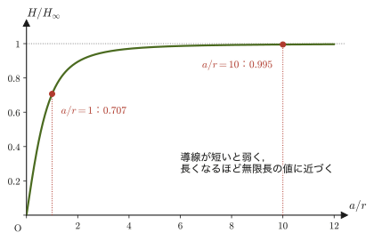
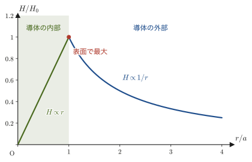
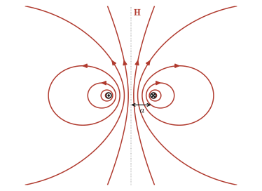
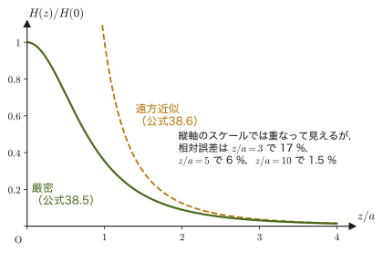
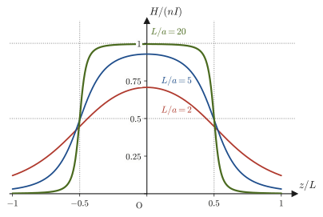

第38章磁場の源 — ビオ＝サバールの法則とアンペールの法則
方位磁針を電流の流れる導線に近づけると，針が振れる——これは，デンマークの物理学者エルステッド（Ørsted）が1820年に発見した，電気と磁気を結びつける最初の決定的な証拠であった．この発見をきっかけに，フランスのビオ（Biot）とサバール（Savart）が精密な実験を重ね，「電流のどの部分が，空間のどの点に，どれだけの磁場をつくるか」を表す式を打ち立てた．高校物理では，「直線電流のまわりの磁場は $H=I/(2\pi r)$」「円形電流の中心の磁場は $H=I/(2r)$」「ソレノイド（コイル）の内部の磁場は $H=nI$」という3つの公式を，暗記事項として学んだはずである．本章では，これらの公式が，ビオ＝サバールの法則というただ1つの実験式と，そこから見えてくるもう1つの法則から導けることを，どの計算も一行も飛ばさずに確認する．
この章の流れは次のとおりである．まず磁力・磁場・磁束密度・磁束を定義し（38.1–38.2節），ビオ＝サバールの法則を積分して，直線電流と円形電流の磁場を求める（38.3–38.4節）．次に，フランスのアンペール（Ampère）が発見したアンペールの法則——電流を取り囲む閉じた経路に沿って磁場を1周積分すると，その値は経路の形によらず，経路を貫く電流の総量に等しい——を導入する（38.5節）．対称性の高い状況（無限に長いソレノイド，円環状のトロイド，太い導線）では，この法則のほうがビオ＝サバールの積分よりずっと簡単に磁場を与える．さらに，姉妹編「大学数学（AD 02）」で学んだストークスの定理を使うと，各点で成り立つ微分形 $\rot\bm B=\mu_0\bm j$ が得られる．この式は，第42章で電磁気学を統一するマクスウェル方程式の1本になる．最後に，円形電流を遠くから眺めたときの磁気双極子としての振る舞いを調べ（38.6節），棒磁石が微小な円形電流の集まりとして理解できること，方位磁針・地球磁場・MRI 装置・ハードディスクの磁気記録などの身近な磁気現象との関係を見る．
- 磁荷（磁極の強さ）$m\ [\mathrm{Wb}]$ の間にはたらく磁力，磁場 $\bm H$，磁束密度 $\bm B=\mu\bm H$，磁束 $\Phi$ の定義と，それぞれの単位の関係
- ビオ＝サバールの法則 $\dd\bm H=\dfrac{1}{4\pi r^2}\left(I\,\dd\bm\ell\times\dfrac{\bm r}{r}\right)$ を用いて，無限長・有限長の直線電流，円形電流の中心の磁場を，積分によって導出する（直線電流のそばのコイルを貫く磁束も求める）
- ソレノイドの内部の磁場 $H=nI$ を，アンペールの法則を使って導出し，なぜ外部の磁場が $0$ になるのかを理解する
- アンペールの法則を，積分形 $\displaystyle\oint_C\bm H\cdot\dd\bm\ell=I_{\text{enc}}$（閉じた経路 $C$ に沿って磁場を1周する線積分．38.4節で説明する）と，ストークスの定理（大学数学 第20章）を用いた微分形 $\rot\bm B=\mu_0\bm j$ の両方の形で使えるようにし，太い導線・トロイドの磁場を求める
- 磁力線が閉じているという事実と発散定理から，$\operatorname{div}\bm B=0$（孤立した磁極は存在しない）を導く
- 円形電流の軸上の磁場を求め，磁気双極子モーメント $\bm m=I\bm S$ を定義して，遠方の磁場が電気双極子の遠方電場と同じ $1/z^3$ の形になることを確認する（有限長ソレノイド・地球磁場への応用を含む）
もとにしたノート：望月泰英『物理学ノート 電磁気学』 pp. 17–20．
38.1 磁力・磁場・磁束密度
高校物理の「電流と磁界」の単元では，直線電流のまわりの磁界の強さ $H=I/(2\pi r)$ や，ソレノイドの内部の磁界 $H=nI$，磁束密度との関係 $B=\mu H$（$\mu$：透磁率）などを，公式として学んだはずである．しかし，そもそも磁場 $H$ や磁束密度 $B$ とは何を表す量なのか，$H$ と $B$ はどう違うのか，という定義そのものは，高校ではあまり深く扱われない．本節では，電場・電位を扱った第35章・第36章と同じ組み立て方で——すなわち，まず「力」を定義し，次に力を及ぼす能力としての「場」を定義し，最後にその場と物質の応答を結びつける「磁束密度」を定義するという順序で——磁気量の体系を整理する．
まず，身近な現象から始めよう．棒磁石に砂鉄を近づけると，砂鉄は磁石の両端に集まって付く．この両端を磁極といい，方位磁針の針が北を指す側をN極，南を指す側をS極とよぶ．2本の棒磁石を近づけると，N極とS極は引き合い，N極どうし・S極どうしは反発する（図38.1）．磁石を真ん中で切っても，N極だけの磁石とS極だけの磁石ができるわけではなく，切り口に新しい極が現れて，N極とS極をもつ小さな磁石が2つできる．
電荷には正・負の2種類があり，同種の電荷どうしは反発し，異種の電荷どうしは引き合った（クーロンの法則，第35章）．磁石にも，N極とS極という2種類の「極」があり，同種の極どうしは反発し，異種の極どうしは引き合うことは，高校の実験でも確認したはずである．そこで，電荷に倣って，磁極の強さを表す量として磁荷（磁気量）$m\ [\mathrm{Wb}]$（ウェーバー，記号 Wb）を導入し，N極を正の磁荷，S極を負の磁荷とみなすことにする．これは，電子や陽子が電荷を持つのと同じように「磁荷だけを持つ粒子（磁気単極子，magnetic monopole）」が存在するという意味ではない——そのような粒子は，これまでの実験で一度も発見されていない．磁荷 $m$ は，あくまで「磁石の一方の端が持つ，磁力を及ぼす能力」を数値化するための，電荷に倣った便宜的な量である（この点は38.5節で $\operatorname{div}\bm B=0$ を学んだのちに，改めて厳密に確認する）．
定義38.1 磁力
2つの磁荷（磁気量）$m_1,m_2\ [\mathrm{Wb}]$ が距離 $r\ [\mathrm{m}]$ だけ離れて置かれているとき，両者の間にはたらく力を磁力（magnetic force）といい，その大きさは，
\begin{equation} |\bm F|=\frac{1}{4\pi\mu}\cdot\frac{|m_1m_2|}{r^2} \label{eq:38-mag-force} \end{equation}である．ここで $\mu\ [\mathrm{N/A^2}]$ は，両磁荷が置かれている物質（媒質）に固有の定数で，透磁率（permeability）と呼ばれる．また，
$$ m_1m_2\lt 0\ \text{ならば引力，}\qquad m_1m_2\gt 0\ \text{ならば斥力} $$である．N極を正，S極を負の磁荷とみなす約束のもとでは，これは「N極とS極のように異種の極（符号が異なり $m_1m_2\lt0$）は引き合い，N極どうし・S極どうしのように同種の極（符号が同じで $m_1m_2\gt0$）は反発する」という，高校で確かめた実験事実と一致する．
イメージ：電場と磁場はよく似ている
式 \eqref{eq:38-mag-force} は，クーロンの法則 $|\bm F|=\dfrac{1}{4\pi\varepsilon}\dfrac{|q_1q_2|}{r^2}$（第35章 法則35.1の真空の誘電率 $\varepsilon_0$ を，一般の媒質の誘電率 $\varepsilon$ に置き換えたもの）と，$q\leftrightarrow m$，$\varepsilon\leftrightarrow\mu$ という置き換えのもとで，全く同じ形をしている．このように，静電気学と静磁気学は，数学的な構造がとてもよく似ている．本章でこれから定義する磁場 $\bm H$，磁束密度 $\bm B$，磁束 $\Phi$ も，それぞれ電場 $\bm E$，電束密度 $\bm D$，電束（電束密度の流束）に対応する量であり（下の表38.1），第35章の議論を下敷きにして理解すると見通しがよい．ただし，このアナロジーには限界もある——電荷は単独で（正だけ，負だけでも）安定に存在できるのに対し，磁荷は必ずN極とS極が対になって現れ，単独の磁荷を取り出すことはできない．この違いの数学的な表現が，38.5節で学ぶ $\operatorname{div}\bm B=0$ である．
| 静電気 | 静磁気 | 単位 |
|---|---|---|
| 電荷 $q$ | 磁荷 $m$ | $\mathrm{C}$ と $\mathrm{Wb}$ |
| 誘電率 $\varepsilon$ | 透磁率 $\mu$ | $\mathrm{F/m}$ と $\mathrm{N/A^2}$ |
| 電場 $\bm E=\bm F/q$ | 磁場 $\bm H=\bm F/m$ | $\mathrm{V/m}$ と $\mathrm{A/m}$ |
| 電束密度 $\bm D=\varepsilon\bm E$（真空中では $\bm D=\varepsilon_0\bm E$） | 磁束密度 $\bm B=\mu\bm H$ | $\mathrm{C/m^2}$ と $\mathrm{Wb/m^2}=\mathrm{T}$ |
ただし，この対応は，磁荷を仮想的な源とした静磁場での見かけの類似である．運動する電荷にはたらく力（ローレンツ力 $\bm F=q\bm v\times\bm B$）を決める基本の場は $\bm B$ であり，力の面では $\bm B$ が電場 $\bm E$ の役割を果たす（第39章）．表38.1を「$\bm H$ が $\bm E$ に，$\bm B$ が $\bm D$ に対応する」と丸暗記しないこと．
定義38.2 磁場（磁界）
磁荷に磁気力がはたらく空間には，磁場（磁界，magnetic field）が存在すると考える．磁荷 $m\ [\mathrm{Wb}]$ に磁気力 $\bm F\ [\mathrm{N}]$ がはたらく位置における磁場 $\bm H$ を，
\begin{equation} \bm H=\frac{\bm F}{m} \qquad\left(\text{すなわち}\ \ \bm F=m\bm H\right) \label{eq:38-mag-field} \end{equation}によって定義する．磁場 $\bm H$ は，その場所に単位の磁荷（$m=1\ \mathrm{Wb}$）を置いたときにはたらく力に等しい，というイメージで理解できる（電場 $\bm E=\bm F/q$，第35章 定義35.1 と全く同じ発想である）．
式 \eqref{eq:38-mag-force} と式 \eqref{eq:38-mag-field} を組み合わせると，磁荷 $m_1$ が，距離 $r$ 離れた点につくる磁場の大きさは，
$$ H=\frac{|\bm F|}{m_2}=\frac{1}{4\pi\mu}\cdot\frac{m_1}{r^2} $$と表せる（$m_1\gt0$ のとき，向きは $m_1$ から遠ざかる向き）．この形は，点電荷のつくる電場 $E=\dfrac{1}{4\pi\varepsilon}\dfrac{q}{r^2}$ と，ここでもまったく同じ構造をしている．
定義38.3 磁束密度
磁場 $\bm H$ と，磁場が置かれている物質の透磁率 $\mu$ を用いて，磁束密度（magnetic flux density）$\bm B$ を，
\begin{equation} \bm B=\mu\bm H \qquad[\mathrm{Wb/m^2}] \label{eq:38-flux-density} \end{equation}によって定義する．$\bm B$ は，磁束線（後述）の密度と向きを表すベクトル量である．高校物理で「磁束密度 $B$」を単位テスラ $[\mathrm{T}]$ で学んだ場合，$1\ \mathrm{T}=1\ \mathrm{Wb/m^2}$ であり，同じ量を指している．
イメージ：透磁率とは何か
透磁率 $\mu$ は物質ごとに異なる値を持つ．式 \eqref{eq:38-flux-density} から分かるとおり，同じ磁場 $\bm H$ のもとでも，透磁率 $\mu$ が大きい物質ほど磁束密度 $\bm B$ が大きくなる．これは，透磁率が大きい物質ほど，その内部を通る磁束線の本数が多くなる（磁束を「通しやすい」）ということを意味している．鉄やニッケルのような強磁性体は真空よりもはるかに大きな透磁率を持ち，電磁石やモーターの鉄心（磁性材料）として使われる理由の1つはここにある．
式 \eqref{eq:38-mag-force}，\eqref{eq:38-mag-field}，\eqref{eq:38-flux-density} を使って，各量の単位の関係を確かめよう．まず，磁荷 $m$ が距離 $r$ 離れた点につくる磁場は $H=\dfrac{m}{4\pi\mu r^2}$ であった．これに $B=\mu H$ を適用すると，透磁率 $\mu$ が打ち消し合って，
$$ B=\mu H=\frac{m}{4\pi r^2} $$となる．右辺は「磁荷 $[\mathrm{Wb}]$ を，半径 $r$ の球の表面積 $4\pi r^2\ [\mathrm{m^2}]$ で割ったもの」なので，$B$ の単位は $[\mathrm{Wb/m^2}]$ である（定義38.3で単位を $[\mathrm{Wb/m^2}]$ と書いたのはこのためである）．一方，$\mu$ の単位は $[\mathrm{N/A^2}]$，$H$ の単位は，定義38.2（$H=F/m$）より $[\mathrm{N/Wb}]$ である．したがって，$B=\mu H$ の単位の関係は，
$$ \left[\frac{\mathrm{Wb}}{\mathrm{m}^2}\right]=[\mu]\times[H]=\frac{\mathrm{N}}{\mathrm{A}^2}\times\frac{\mathrm{N}}{\mathrm{Wb}} $$となる．この式の両辺に $[\mathrm{Wb}]$ を掛けて分母をはらうと，
$$ \frac{\mathrm{Wb}^2}{\mathrm{m}^2}=\frac{\mathrm{N}^2}{\mathrm{A}^2} \qquad\therefore\ \mathrm{Wb}^2=\frac{\mathrm{N}^2\,\mathrm{m}^2}{\mathrm{A}^2} $$となり，両辺の平方根をとると，
\begin{equation} [\mathrm{Wb}]=\left[\frac{\mathrm{N\,m}}{\mathrm{A}}\right]=\left[\frac{\mathrm{J}}{\mathrm{A}}\right] \label{eq:38-unit-check} \end{equation}が得られる（$\mathrm{N\,m}=\mathrm{J}$，仕事・エネルギーの単位ジュールであることを使った）．すなわち，磁荷の単位ウェーバーは，「エネルギーを電流で割った量」と同じ次元を持つ．この結果を使うと，磁場 $H$ の単位も書き直せる：
$$ [H]=\left[\frac{\mathrm{N}}{\mathrm{Wb}}\right]=\left[\frac{\mathrm{N}}{\mathrm{N\,m}/\mathrm{A}}\right]=\left[\frac{\mathrm{A}}{\mathrm{m}}\right] $$となり，これは，多くの教科書で磁場（磁界の強さ）の単位として使われる $[\mathrm{A/m}]$ と一致する．これから先，直線電流やソレノイドがつくる磁場を求める公式（$H=I/(2\pi r)$，$H=nI$ など）が，電流 $[\mathrm{A}]$ を長さ $[\mathrm{m}]$ で割った形——すなわち単位が $[\mathrm{A/m}]$ になる形——で表されるのは，この単位の対応関係のおかげである．
注意：$\mu$（一般の透磁率）と $\mu_0$（真空の透磁率）の違い
本節の定義38.1–38.3では，磁荷が置かれている物質に固有の透磁率 $\mu$ を使った．しかし，38.2節以降で電流がつくる磁場を扱うときは，特に断らない限り，導線のまわりが真空（または空気．透磁率は真空とほとんど同じ）である場合を考え，透磁率として真空の透磁率 $\mu_0=1.256\,637\,062\,12\times10^{-6}\ \mathrm{N/A^2}$ を使う．物質の透磁率は $\mu=\mu_0\mu_{\mathrm r}$（$\mu_{\mathrm r}$ は比透磁率，鉄などでは数百〜数万にもなる）と書かれ，物質中の磁場は第41章で改めて扱う．また，磁荷 $m$ のモデルは，電流が磁場をつくるという現代的な理解の出発点ではなく，電荷との類推で磁場の量を整理するための道具である．磁石のまわりの磁場も，実は微小な電流（電子の運動）がつくっていると理解される（38.6節）．
例題38.1 磁極間の力と磁場・磁束密度
真空中（透磁率 $\mu_0=1.256\,637\,062\,12\times10^{-6}\ \mathrm{N/A^2}$）に，磁荷 $m_1=5.0\times10^{-5}\ \mathrm{Wb}$ の磁極が置かれている．この磁極から $r=0.020\ \mathrm{m}$ 離れた点における磁場 $H$ と磁束密度 $B$ を求めよ．また，その点に磁荷 $m_2=-3.0\times10^{-5}\ \mathrm{Wb}$ の磁極を置いたとき，はたらく力の大きさと，それが引力・斥力のどちらであるかを答えよ．
解答 磁場は，定義38.1・定義38.2を組み合わせた式 $H=m_1/(4\pi\mu_0r^2)$ より，
$$ H=\frac{m_1}{4\pi\mu_0r^2}=\frac{5.0\times10^{-5}}{4\pi\times1.256\,637\times10^{-6}\times(0.020)^2}\approx7.92\times10^{3}\ \mathrm{A/m} $$磁束密度は，定義38.3（$B=\mu_0H$）より，
$$ B=\mu_0H\approx1.256\,637\times10^{-6}\times7.92\times10^{3}\approx9.95\times10^{-3}\ \mathrm{T} $$力の大きさは，式 \eqref{eq:38-mag-force} より，
$$ |F|=\frac{|m_1m_2|}{4\pi\mu_0r^2}=\frac{(5.0\times10^{-5})\times(3.0\times10^{-5})}{4\pi\times1.256\,637\times10^{-6}\times(0.020)^2}\approx0.237\ \mathrm{N} $$$m_1m_2=(5.0\times10^{-5})\times(-3.0\times10^{-5})\lt0$ なので，定義38.1より引力である．なお，磁束密度は $B=\mu_0H=m_1/(4\pi r^2)$ とも書け，$\mu_0$ に依存しない形に整理できる（$H$ は $1/\mu_0$ に比例し，$B$ はそれに $\mu_0$ を掛けたものだから，$\mu_0$ が打ち消し合う．上の単位の議論を参照）．
38.2 磁束とビオ＝サバールの法則
電場のときは，電気力線の本数（電束）を使って，ガウスの法則という強力な道具を手に入れた（第35章）．磁場についても，同じように「磁束線の本数」を数える量を定義しておく．
定義38.4 磁束
磁束密度 $\bm B$ が分布している空間内に，向きを持った面 $S$（単位法線ベクトル $\bm n$）をとる．この面を貫く磁束（magnetic flux）$\Phi\ [\mathrm{Wb}]$ を，
\begin{equation} \Phi=\iint_S\bm B\cdot\bm n\,\dd S \label{eq:38-flux} \end{equation}で定義する．これは，電束（電束密度 $\bm D$ の流束 $\iint_S\bm D\cdot\bm n\,\dd S$，第35章 35.4節）の磁場版であり，磁束線（磁力線）が面 $S$ を貫く本数を表す量である．磁束の単位 $\mathrm{Wb}$ は，第40章で電磁誘導を学ぶと $1\ \mathrm{Wb}=1\ \mathrm{V\,s}$ とも表せることが分かる．磁束密度 $\bm B$ の単位が $[\mathrm{Wb/m^2}]$ であったのは，まさに「単位面積あたりの磁束線の本数」という意味だったことが，この定義から分かる．
それでは，そもそも磁場 $\bm H$ や磁束密度 $\bm B$ は，何がつくり出しているのだろうか．永久磁石のN極・S極がつくることは直感的に理解できるが，磁石を使わずに磁場をつくる方法もある——それが，電流である．1820年，デンマークの物理学者エルステッド（Ørsted）は，電流を流した導線のそばに置いた方位磁針が振れることを発見した．電流がその周囲に磁場をつくる，という事実が初めて実験的に示された瞬間である．この発見に触発されて，フランスのビオ（Biot）とサバール（Savart）は，電流の流れる導線のまわりの磁場を精密に測定する実験を重ね，電流の微小部分（電流素片）が空間内の任意の点につくる微小な磁場を表す実験式を発見した．これが，ビオ＝サバールの法則である．
電流素片とは，電流 $I\ [\mathrm{A}]$ が流れる導線上の微小な長さ $\dd\ell$ の部分を表すベクトル $I\dd\bm\ell$（向きは電流の向き）である．電流素片から観測点へ向かう位置ベクトルを $\bm r$（大きさ $r=|\bm r|$）とし，$\dd\bm\ell$ と $\bm r$ のなす角を $\theta$ とする（図38.2）．なお，$\bm r$ の向きの単位ベクトル $\bm r/r$ を，$\hat{\bm r}$ とも書く（他章の動径方向の単位ベクトル $\bm e_r$ と同じもの）．
数学の道具：外積（ベクトル積）の大きさ
2つのベクトル $\bm A,\bm B$ の外積（ベクトル積）$\bm A\times\bm B$ は，大きさが $|\bm A\times\bm B|=|\bm A||\bm B|\sin\theta$（$\theta$ は $\bm A,\bm B$ のなす角），向きが $\bm A,\bm B$ の両方に垂直で右ねじの法則にしたがう，というベクトルである（大学数学 第15章 15.3節）．この性質を使うと，電流素片 $I\dd\bm\ell$ と，観測点への向きの単位ベクトル $\bm r/r$ との外積の大きさは，
$$ \left|I\dd\bm\ell\times\frac{\bm r}{r}\right|=I\cdot\frac{r}{r}\cdot\dd\ell\cdot\sin\theta=I\sin\theta\,\dd\ell \qquad\left(\because\ |\bm A\times\bm B|=|\bm A||\bm B|\sin\theta,\ \left|\frac{\bm r}{r}\right|=1\right) $$となる．これが，下のビオ＝サバールの法則の大きさの式に現れる $\sin\theta$ の由来である．
法則38.1 ビオ＝サバールの法則
電流 $I$ が流れる導線上の電流素片 $I\dd\bm\ell$ が，位置ベクトル $\bm r$（大きさ $r$，電流素片からの向き）だけ離れた点につくる微小な磁場 $\dd\bm H$ は，
\begin{equation} \dd\bm H=\frac{1}{4\pi r^2}\left(I\dd\bm\ell\times\frac{\bm r}{r}\right) \label{eq:38-biot-savart} \end{equation}である（ビオ＝サバールの法則，Biot–Savart law）．その大きさは，上の「数学の道具」の結果を使うと，
\begin{equation} \dd H=|\dd\bm H|=\frac{I\sin\theta}{4\pi r^2}\,\dd\ell \label{eq:38-biot-savart-mag} \end{equation}と書ける．ただし $\theta$ は $\dd\bm\ell$ と $\bm r$ のなす角である．真空中で $\bm B=\mu_0\bm H$ を掛けて磁束密度で書けば，高校の教科書でも見慣れた形 $\dd\bm B=\dfrac{\mu_0}{4\pi}\,\dfrac{I\,\dd\bm\ell\times\hat{\bm r}}{r^2}$ になる．単位を確かめると，$I\,\dd\ell/r^2$ は $\mathrm{A\cdot m/m^2}=\mathrm{A/m}$ で，磁場 $H$ の単位に一致する．導線全体がつくる磁場は，導線上のすべての電流素片からの寄与 $\dd\bm H$ を足し合わせる（積分する）ことで求まる．この法則により，電流と磁場の関係が数式として明瞭になり，直線電流・円形電流・ソレノイドなど，さまざまな形状の電流がつくる磁場の公式が，すべてこの1つの式から導けるようになる．
イメージ：$\dd\bm H$ の向きは「右ねじ」で決まる
式 \eqref{eq:38-biot-savart} の外積 $\dd\bm\ell\times\bm r$ の向きは，右ねじを $\dd\bm\ell$ の向きから $\bm r$ の向きへ（小さいほうの角で）回したときにねじが進む向きである．図38.2では，$\dd\bm\ell$ が上向き，$\bm r$ が右向き（やや上）なので，右ねじは時計回りに回り，ねじは紙面の奥へ進む．これは，直線電流のまわりの磁場が「右ねじの進む向きを電流の向きにとったとき，ねじの回る向き」になるという高校物理の右ねじの法則（図38.3）と同じ規則を，ベクトルの言葉で言い直したものである．
電流が導線の断面全体に広がって流れている場合は，電流素片 $I\dd\bm\ell$ の代わりに，微小な体積 $\dd V$ を流れる電流 $\bm j\,\dd V$（$\bm j$ は電流密度，第37章 37.2節）を使って，$\dd\bm H=\dfrac{1}{4\pi r^2}\left(\bm j\times\dfrac{\bm r}{r}\right)\dd V$ と書く．導線が細いときは $\bm j\,\dd V=I\,\dd\bm\ell$ である（細い導線の断面積を $S$ とすると $j=I/S$，$\dd V=S\,\dd\ell$ なので，$j\,\dd V=(I/S)(S\,\dd\ell)=I\,\dd\ell$ となる）．
イメージ：ビオ＝サバールの法則とクーロンの法則の違い
クーロンの法則（第35章）は，点電荷という「点」がつくる電場を表す式であった．一方，ビオ＝サバールの法則は，電流素片という「向きを持った微小な線分」がつくる磁場を表す式であり，外積が入っているぶん，クーロンの法則よりも幾何学的に複雑である．また，孤立した電流素片だけを取り出すことはできない（電流は必ずつながった導線を流れる）ので，ビオ＝サバールの法則は，単独では使えず，必ず導線全体にわたる積分（38.3節以降で実際に行う）と組み合わせて使うことになる．
例題38.2 ビオ＝サバールの法則の直接計算
電流 $I=10\ \mathrm{A}$ が流れる導線上の，長さ $\dd\ell=2.0\times10^{-3}\ \mathrm{m}$ の電流素片から，$r=0.20\ \mathrm{m}$ 離れ，$\dd\bm\ell$ とのなす角が $\theta=30^\circ$ である点における微小磁場の大きさ $\dd H$ を求めよ．
解答 式 \eqref{eq:38-biot-savart-mag} に数値を代入すると，
$$ \dd H=\frac{I\sin\theta}{4\pi r^2}\,\dd\ell=\frac{10\times\sin30^\circ}{4\pi\times(0.20)^2}\times(2.0\times10^{-3})=\frac{10\times0.5}{4\pi\times0.04}\times(2.0\times10^{-3})\approx1.99\times10^{-2}\ \mathrm{A/m} $$である．なお，これはただ1つの電流素片からの寄与にすぎない．導線全体がつくる磁場を求めるには，導線上のすべての電流素片についてこの $\dd H$ を積分する必要がある——それを実際に行うのが，次節以降の内容である．
38.3 直線電流のつくる磁場
ビオ＝サバールの法則を，最も基本的な形——十分に長い直線状の導線——に適用してみよう．高校物理で覚えた公式 $H=I/(2\pi r)$ を，一行も飛ばさずに導く．
導線に沿って座標 $x$ をとり，導線から垂直距離 $r$ だけ離れた点 P で磁場を求める．P から導線へ下ろした垂線の足を原点 O とし，O から $x$ の位置（図では O の真上）に，微小区間 $\dd x$（電流素片．電流の向きは $x$ が増える向き）をとる（図38.4）．
文字の使い方の切り替えに注意する．法則38.1では，$r$ は「電流素片から観測点までの距離」，$\theta$ は「$\dd\bm\ell$ と $\bm r$ のなす角」であった．この節では，$r$ を「導線から P までの垂直距離」（積分のあいだ変わらない定数）として使う．そこで，電流素片から P までの距離を $R$，$\dd\bm\ell$（電流の向き）と電流素片から P へ向かう位置ベクトルのなす角を $\alpha$ と書くことにする．法則38.1の $(r,\theta)$ が，この節の $(R,\alpha)$ にあたる．
P から見て，垂線 PO と，P から電流素片への直線とのなす角を $\theta$ とすると，直角三角形の関係から，$R=\dfrac{r}{\cos\theta}$ であり，また $x=r\tan\theta$ である．一方，電流素片の位置では，電流の向き（$\dd\bm\ell$，$x$ 軸の正の向き）と，電流素片から P へ向かう位置ベクトルのなす角 $\alpha$ は，直角に $\theta$ を加えた $\alpha=\theta+\dfrac{\pi}{2}$ になる（$\theta=0$，すなわち P の真横に電流素片があるときは $\dd\bm\ell\perp\bm r$ で，なす角がちょうど $\pi/2$ であることから確かめられる．O より下の電流素片では $\theta\lt0$ と約束する）．
導出：無限長直線電流のつくる磁場
電流素片 $I\,\dd x$ が点 P につくる微小磁場の大きさは，ビオ＝サバールの法則（式 \eqref{eq:38-biot-savart-mag}）の $(r,\theta,\dd\ell)$ を $(R,\alpha,\dd x)$ に読み替えて $\dd H=\dfrac{I\sin\alpha}{4\pi R^2}\,\dd x$ である．ここへ $R=\dfrac{r}{\cos\theta}$，$\alpha=\theta+\dfrac{\pi}{2}$ を代入すると，
$$ \dd H=\frac{I\sin\!\left(\theta+\dfrac{\pi}{2}\right)}{4\pi\left(\dfrac{r}{\cos\theta}\right)^2}\,\dd x $$となる．ここで，三角関数の性質 $\sin\!\left(\theta+\dfrac{\pi}{2}\right)=\cos\theta$（$\sin,\cos$ の位相が $\pi/2$ ずれるという関係，あるいは加法定理 $\sin(\theta+\pi/2)=\sin\theta\cos(\pi/2)+\cos\theta\sin(\pi/2)=\cos\theta$ から確認できる）を使い，さらに分母の $\left(\dfrac{r}{\cos\theta}\right)^2=\dfrac{r^2}{\cos^2\theta}$ を整理すると，
\begin{equation} \dd H=\frac{I\cos\theta}{4\pi\cdot\dfrac{r^2}{\cos^2\theta}}\,\dd x=\frac{I\cos^3\theta}{4\pi r^2}\,\dd x \label{eq:38-straight-dH} \end{equation}が得られる（分子・分母に $\cos^2\theta$ を掛けて整理した）．導線全体（$x=-\infty$ から $x=\infty$ まで）にわたってこれを積分すると，磁場の全体が求まる：
\begin{equation} H=\int_{-\infty}^{\infty}\dd H=\int_{-\infty}^{\infty}\frac{I\cos^3\theta}{4\pi r^2}\,\dd x \label{eq:38-straight-integral1} \end{equation}被積分関数が $\theta$ と $x$ の両方で書かれているので，このままでは積分できない．そこで，変数を $\theta$ に統一する置換積分を行う（$x$ に統一して $\cos\theta=r/\sqrt{r^2+x^2}$ を使っても計算できるが，$\theta$ に統一するほうが短い）．図38.4より，$x=r\tan\theta$（大学数学 第5章 5.1節で学んだ $x=a\tan\theta$ 型の置換積分と全く同じ形）であるから，両辺を $\theta$ で微分して，
\begin{equation} \dd x=\frac{r}{\cos^2\theta}\,\dd\theta \label{eq:38-straight-sub} \end{equation}が成り立つ（$\dfrac{\dd}{\dd\theta}(r\tan\theta)=\dfrac{r}{\cos^2\theta}$，$\tan\theta=\sin\theta/\cos\theta$ の商の微分公式から確認できる）．また，積分区間も $x$ から $\theta$ に変換する必要がある．導線が無限に長いので，$x\to-\infty$ のとき，図の角 $\theta$ は $-\dfrac{\pi}{2}$（導線の「はるか下方」を見る向き）に近づき，$x\to\infty$ のとき $\theta\to\dfrac{\pi}{2}$ に近づく．したがって，式 \eqref{eq:38-straight-integral1} は，
$$ H=\int_{-\frac{\pi}{2}}^{\frac{\pi}{2}}\frac{I}{4\pi r^2}\cos^3\theta\cdot\frac{r}{\cos^2\theta}\,\dd\theta =\int_{-\frac{\pi}{2}}^{\frac{\pi}{2}}\frac{I}{4\pi r}\cos\theta\,\dd\theta $$と書き直せる（$\cos^3\theta\times\dfrac{1}{\cos^2\theta}=\cos\theta$，および $r^2$ と $r$ が約分されて $1/r$ が残ることに注意）．この積分は初等的に実行できて，
$$ \int_{-\frac{\pi}{2}}^{\frac{\pi}{2}}\frac{I}{4\pi r}\cos\theta\,\dd\theta =\frac{I}{4\pi r}\Bigl[\sin\theta\Bigr]_{-\frac{\pi}{2}}^{\frac{\pi}{2}} =\frac{I}{4\pi r}\left\{\sin\frac{\pi}{2}-\sin\!\left(-\frac{\pi}{2}\right)\right\} =\frac{I}{4\pi r}\{1-(-1)\}=\frac{I}{2\pi r} $$となる（$\sin(\pi/2)=1$，$\sin(-\pi/2)=-\sin(\pi/2)=-1$，奇関数の性質を使った）．したがって，
\begin{equation} H=\frac{I}{2\pi r} \label{eq:38-straight-result} \end{equation}（導出終わり）
公式38.1 無限長直線電流のつくる磁場
十分に長い直線状の導線に電流 $I$ が流れているとき，導線から垂直距離 $r$ の点における磁場の大きさは，
\begin{equation} H=\frac{I}{2\pi r} \label{eq:38-straight-formula} \end{equation}である．向きは，右ねじの法則にしたがい，電流を中心とする円の接線方向である（図38.3）．磁束密度は，真空中では $B=\mu_0H=\dfrac{\mu_0I}{2\pi r}$ となる．次元の確認：右辺 $I/r$ の単位は $\mathrm{A/m}$ で，磁場 $H$ の単位に一致する．
イメージ：磁場が距離に反比例するのはなぜか，「無限に長い」とはどういうことか
磁力線は導線を中心とする同心円なので，半径 $r$ の円の全周 $2\pi r$ に沿って磁場の大きさは一定であり，公式38.1を $H\times2\pi r=I$ と書き直すと，「磁場に円周の長さを掛けると，中を通る電流に等しい」という形になる．なお，1個の電流素片がつくる磁場は距離の2乗に反比例して弱まる（法則38.1）のに，直線電流では $1/r$ とゆるやかに弱まるのは，遠くの電流素片もすべて足し合わされるからである．遠方の素片は，1個あたりは弱くても数が多いので，全体では $1/r^2$ よりも1乗分ゆるやかに減る．無限に長い線電荷のつくる電場が $1/r$ になるのも同じ理由である（第35章 35.7節の演習）．これは，次の38.5節で学ぶアンペールの法則の最も簡単な場合である．また，高校物理で $B=\dfrac{\mu_0I}{2\pi r}=2\times10^{-7}\dfrac{I}{r}\ [\mathrm{T}]$ と覚えた係数 $\dfrac{\mu_0}{2\pi}\approx2\times10^{-7}\ \mathrm{N/A^2}$ は，公式38.1に $B=\mu_0H$ を代入したものにほかならない．ここで「無限に長い」とは，導線の長さが，磁場を求める点までの距離 $r$ よりも十分に長い，という意味である．どのくらい長ければよいかは，次の「有限に長い導線」で調べる．
例題38.3 無限長直線電流の磁場（数値）
十分に長い直線導線に電流 $I=5.0\ \mathrm{A}$ を流したとき，導線から $r=2.0\ \mathrm{cm}=0.020\ \mathrm{m}$ の点における磁場 $H$ と磁束密度 $B$（真空中）を求めよ．
解答 公式38.1より，
$$ H=\frac{I}{2\pi r}=\frac{5.0}{2\pi\times0.020}\approx39.8\ \mathrm{A/m} $$磁束密度は，
$$ B=\mu_0H=1.256\,637\times10^{-6}\times39.8\approx5.00\times10^{-5}\ \mathrm{T}\ (=50\ \mu\mathrm{T}) $$である．ちなみに，地磁気の磁束密度の大きさは場所によっておよそ $25$–$65\ \mu\mathrm{T}$ であり，$5.0\ \mathrm{A}$ の電流でも，導線から $2.0\ \mathrm{cm}$ の距離では地磁気と同程度の磁場ができる．電流の近くに置いた方位磁針の針が振れる（エルステッドの実験）のは，このためである．
38.3.1 有限に長い導線（現実的な導線）のつくる磁場
公式38.1は，導線が「無限に長い」という理想化のもとで成り立つ式である．現実の導線には必ず端があるので，有限の長さの導線がつくる磁場も求めておこう．導線の長さを $2a$ とし，観測点 P は導線の中点の真横で，導線から距離 $r$ の位置にあるとする（すなわち，P から導線へ下ろした垂線の足 O が導線の中点で，導線は O を中心に上下対称に長さ $a$ ずつ伸びている，図38.5）．
導出：有限長導線のつくる磁場
幾何学的な設定は無限長の場合と全く同じなので，電流素片がつくる微小磁場も，式 \eqref{eq:38-straight-dH} と同じく
$$ \dd H=\frac{I\sin\!\left(\theta+\dfrac{\pi}{2}\right)}{4\pi\left(\dfrac{r}{\cos\theta}\right)^2}\,\dd x=\frac{I\cos^3\theta}{4\pi r^2}\,\dd x $$である．違うのは積分区間だけで，今度は導線の端（$x=-a$ から $x=a$ まで）で積分する：
$$ H=\int_{-a}^{a}\dd H=\int_{-a}^{a}\frac{I\cos^3\theta}{4\pi r^2}\,\dd x $$無限長の場合と同じ置換 $x=r\tan\theta$，$\dd x=\dfrac{r}{\cos^2\theta}\,\dd\theta$（式 \eqref{eq:38-straight-sub}）を使うと，積分区間は，$x=-a$ のとき $\theta=\tan^{-1}\!\left(-\dfrac{a}{r}\right)=-\tan^{-1}\dfrac{a}{r}$（$\tan^{-1}$ は奇関数），$x=a$ のとき $\theta=\tan^{-1}\dfrac{a}{r}$ となる．したがって，
$$ H=\int_{-\tan^{-1}\frac{a}{r}}^{\tan^{-1}\frac{a}{r}}\frac{I}{4\pi r^2}\cos^3\theta\cdot\frac{r}{\cos^2\theta}\,\dd\theta =\int_{-\tan^{-1}\frac{a}{r}}^{\tan^{-1}\frac{a}{r}}\frac{I}{4\pi r}\cos\theta\,\dd\theta $$ $$ =\frac{I}{4\pi r}\left\{\sin\!\left(\tan^{-1}\frac{a}{r}\right)-\sin\!\left(-\tan^{-1}\frac{a}{r}\right)\right\} =\frac{I}{4\pi r}\cdot2\sin\!\left(\tan^{-1}\frac{a}{r}\right) $$（$\sin$ が奇関数であることを使って，$-\tan^{-1}(a/r)$ での値を $-\sin(\tan^{-1}(a/r))$ と書き直した）．すなわち，
\begin{equation} H=\frac{I}{2\pi r}\sin\!\left(\tan^{-1}\frac{a}{r}\right) \label{eq:38-finite-result} \end{equation}（導出終わり）
公式38.2 有限長直線電流のつくる磁場
長さ $2a$ の直線導線（観測点の垂線の足から見て両端が $\pm a$ の対称な位置にある場合）に電流 $I$ が流れているとき，導線から垂直距離 $r$ の点における磁場の大きさは，
\begin{equation} H=\frac{I}{2\pi r}\sin\!\left(\tan^{-1}\frac{a}{r}\right) \label{eq:38-finite-formula} \end{equation}である．$\sin(\tan^{-1}x)=x/\sqrt{1+x^2}$（直角三角形で対辺 $x$，隣辺 $1$，斜辺 $\sqrt{1+x^2}$ を考えれば確認できる）という恒等式を使うと，$\sin\!\left(\tan^{-1}\dfrac{a}{r}\right)=\dfrac{a}{\sqrt{a^2+r^2}}$ とも書けるので，公式38.2は，
$$ H=\frac{Ia}{2\pi r\sqrt{a^2+r^2}} $$という，逆正接を含まない形にも書き直せる．$a\to\infty$（導線が限りなく長くなる極限）で $\tan^{-1}(a/r)\to\pi/2$，$\sin(\tan^{-1}(a/r))\to1$ となるので，公式38.2は公式38.1（$H=I/(2\pi r)$）に一致する——有限長の公式は，無限長の公式を特別な場合として含む，より一般的な公式である．
P の真横（垂線の足 O）に対して導線の端が非対称な位置にあるとき（下端が $x=x_1$，上端が $x=x_2$）は，積分区間が $\theta_1=\tan^{-1}(x_1/r)$ から $\theta_2=\tan^{-1}(x_2/r)$ に変わるだけなので，同じ計算で
\begin{equation} H=\frac{I}{4\pi r}\int_{\theta_1}^{\theta_2}\cos\theta\,\dd\theta=\frac{I}{4\pi r}\left(\sin\theta_2-\sin\theta_1\right) \label{eq:38-finite-general} \end{equation}となる（$\theta_2=-\theta_1=\tan^{-1}(a/r)$ とおくと公式38.2に戻る）．導線が折れ曲がった形の回路の磁場は，この式を直線部分ごとに使って足し合わせれば求まる（演習38.2，演習38.3）．
例38.1 長さ $2\sqrt3\ \mathrm{m}$ の導線がつくる磁場
長さ $2\sqrt3\approx3.5\ \mathrm{m}$ の導線に電流 $I$ を流したとき，導線の中点から垂直に $r=1.0\ \mathrm{m}$ 離れた点における磁場を求めてみよう．
公式38.2に半長 $a=\sqrt3\ \mathrm m$ を代入すると，一般の $r$ について $H=\dfrac{I}{2\pi r}\sin\!\left(\tan^{-1}\dfrac{\sqrt3}{r}\right)$ となり，$\sin\lt1$ なので無限長の導線がつくる磁場 $I/(2\pi r)$ より少し弱い．そこで $r=1.0\ \mathrm m$ を代入すると，
$$ H=\frac{I}{2\pi\times1.0}\sin\!\left(\tan^{-1}\sqrt3\right) $$ここで，$\tan^{-1}\sqrt3=\dfrac{\pi}{3}$（$60^\circ$．正三角形の半分の直角三角形で，対辺 $\sqrt3$，隣辺 $1$ の角度が $60^\circ$ であることから）であり，$\sin\dfrac{\pi}{3}=\dfrac{\sqrt3}{2}$ である．したがって，
$$ H=\frac{I}{2\pi}\cdot\frac{\sqrt3}{2}=\frac{\sqrt3}{4\pi}I $$となる．一方，同じ $r=1.0\ \mathrm{m}$ での無限長導線の磁場は，公式38.1より $H_\infty=I/(2\pi)$ である．比をとると，
$$ \frac{H}{H_\infty}=\sin\!\left(\tan^{-1}\sqrt3\right)=\frac{\sqrt3}{2}\approx0.866 $$であり，有限長の導線がつくる磁場は，無限長の導線がつくる磁場よりも少し弱い（$\tan^{-1}\sqrt3=\pi/3$，$\sin(\pi/3)=\sqrt3/2$）．端より先の部分（無限長の導線のうち，長さ $2\sqrt3\ \mathrm{m}$ の導線から欠けている部分）がつくるはずの磁場が加わらないぶん，導線が短いほど磁場は無限長の場合より弱くなる．
例題38.4 有限長導線の磁場と無限長極限
長さ $1.0\ \mathrm{m}$（半長 $a=0.50\ \mathrm{m}$）の直線導線に電流 $I=8.0\ \mathrm{A}$ を流した．導線の中点から垂直に $r=0.050\ \mathrm{m}$ 離れた点における磁場 $H$ を求め，同じ $r$ での無限長導線の磁場と比較せよ．
解答 公式38.2より，
$$ H=\frac{I}{2\pi r}\sin\!\left(\tan^{-1}\frac{a}{r}\right)=\frac{8.0}{2\pi\times0.050}\sin\!\left(\tan^{-1}\frac{0.50}{0.050}\right)=\frac{8.0}{2\pi\times0.050}\sin(\tan^{-1}10) $$$\tan^{-1}10\approx84.3^\circ$，$\sin(84.3^\circ)\approx0.9950$ なので，
$$ H\approx25.5\times0.9950\approx25.3\ \mathrm{A/m} $$一方，無限長導線の場合は，公式38.1より，
$$ H_\infty=\frac{I}{2\pi r}=\frac{8.0}{2\pi\times0.050}\approx25.5\ \mathrm{A/m} $$比は $H/H_\infty\approx0.995$（$99.5\ \%$）であり，導線の半長 $a=0.50\ \mathrm{m}$ が観測点までの距離 $r=0.050\ \mathrm{m}$ の10倍もあると，有限長の効果はわずか$0.5\ \%$程度の違いしか生まない．これは，導線の端が観測点から見て「ほぼ無限遠」に見えるほど遠いためである．
この比 $H/H_\infty=\sin\left(\tan^{-1}\dfrac{a}{r}\right)=\dfrac{a}{\sqrt{a^2+r^2}}$ を $a/r$ の関数として描いたのが図38.6である．$a/r=1$（導線の半長が距離と同じ）では $0.707$ であるが，$a/r=7$ で $99\ \%$，$a/r=22$ で $99.9\ \%$ に達する．高校物理で「十分に長い導線」と言うときの「十分に長い」は，この程度の長さを意味している．

例題38.5 直線電流のそばの長方形コイルを貫く磁束
無限に長い直線導線に電流 $I=10\ \mathrm{A}$ が流れている．導線と同じ平面内に，導線に平行な辺の長さが $\ell=0.20\ \mathrm{m}$，導線に垂直な辺の長さが $w=0.10\ \mathrm{m}$ の長方形のコイルを，近いほうの辺が導線から $d=0.050\ \mathrm{m}$ の位置になるように置く（図38.7）．真空中で，このコイルを貫く磁束 $\Phi$ を求めよ．
解答 導線から距離 $r$ の点の磁束密度は，公式38.1と $B=\mu_0H$ より $B(r)=\dfrac{\mu_0I}{2\pi r}$ で，向きはコイルの面に垂直（図38.7では奥向き）である．コイルの面の法線ベクトル $\bm n$ を奥向きにとれば $\bm B\cdot\bm n=B(r)$ である．$B$ は $r$ とともに変わるので，磁束の定義 \eqref{eq:38-flux} を，一様な磁場のときの「$B\times$面積」のようには計算できない．そこで，導線から距離 $r$ から $r+\dd r$ の間にある，幅 $\dd r$，長さ $\ell$ の細い帯を考える．この帯の面積は $\dd S=\ell\,\dd r$ で，帯の内部では $B$ を一定（$=B(r)$）とみなしてよいので，帯を貫く磁束は，
$$ \dd\Phi=B(r)\,\dd S=\frac{\mu_0I}{2\pi r}\,\ell\,\dd r $$である．コイルは $r=d$ から $r=d+w$ までの帯でできているので，これらをすべて足し合わせる（積分する）と，
$$ \Phi=\int_{d}^{d+w}\frac{\mu_0I\ell}{2\pi r}\,\dd r=\frac{\mu_0I\ell}{2\pi}\Bigl[\ln r\Bigr]_{d}^{d+w}=\frac{\mu_0I\ell}{2\pi}\ln\frac{d+w}{d} $$となる（$\displaystyle\int\dfrac{\dd r}{r}=\ln r$，$\ln(d+w)-\ln d=\ln\dfrac{d+w}{d}$ を使った）．数値を代入する．$\dfrac{\mu_0}{2\pi}=2.0\times10^{-7}\ \mathrm{N/A^2}$ であり，$\dfrac{d+w}{d}=\dfrac{0.15}{0.050}=3$，$\ln3=1.0986$ なので，
$$ \Phi=(2.0\times10^{-7})\times10\times0.20\times\ln3=4.0\times10^{-7}\times1.0986\approx4.4\times10^{-7}\ \mathrm{Wb} $$である．単位の確認：$[\mu_0I\ell]=\dfrac{\mathrm N}{\mathrm A^2}\cdot\mathrm A\cdot\mathrm m=\dfrac{\mathrm N\,\mathrm m}{\mathrm A}=\mathrm{Wb}$（式 \eqref{eq:38-unit-check}）で，磁束の単位と一致する．コイルの近い辺での磁束密度は $B(d)=\dfrac{\mu_0I}{2\pi d}=4.0\times10^{-5}\ \mathrm T$，遠い辺では $B(d+w)=1.3\times10^{-5}\ \mathrm T$ であり，全体の平均は $\Phi/(\ell w)=2.2\times10^{-5}\ \mathrm T$ とその間の値になる．この導線の電流 $I$ を変化させると磁束 $\Phi$ が変わり，コイルには起電力が生じる．これが第40章で学ぶ電磁誘導である．
38.4 円形電流とソレノイドがつくる磁場
次に，導線を輪（円形ループ）に曲げたときに，その中心にできる磁場を求める．これも高校物理で $H=I/(2r)$ という公式として学んだはずである．
中心における磁場を求めるには，ループ上のすべての電流素片 $I\,\dd x$（$\dd x$ は円周に沿った微小な弧の長さ）からの寄与を足し合わせる（図38.9）．円形ループの中心では，どの電流素片についても，電流素片の向き（円の接線方向）と，電流素片から中心への位置ベクトルの向き（円の半径方向）は，常に直角に交わる——接線と半径は，円周上のどの点でも垂直だからである．したがって，ビオ＝サバールの法則（式 \eqref{eq:38-biot-savart-mag}）の角 $\theta$ は，どの電流素片についても $\theta=90^\circ$ である．
導出：円形電流の中心につくる磁場
半径 $r$ の円形ループに電流 $I$ が流れているとき，円周上の電流素片 $I\,\dd x$ が中心につくる微小磁場の大きさは，ビオ＝サバールの法則（式 \eqref{eq:38-biot-savart-mag}）に $\theta=90^\circ$（$\sin90^\circ=1$）を代入して，
\begin{equation} \dd H=\frac{I}{4\pi r^2}\sin90^\circ\cdot\dd x=\frac{I}{4\pi r^2}\,\dd x \label{eq:38-circular-dH} \end{equation}となる．円周（円形の閉じた経路を $C$ とする）上のすべての電流素片について，中心からの距離はどれも同じ $r$ なので，$\dd H$ の大きさもすべての電流素片で等しく，しかも向き（紙面に垂直）もすべて同じである．したがって，$\dd H$ を単純にスカラーとして足し合わせればよい．円周に沿った弧の長さ $x$ を，中心角 $\theta'$（$0$ から $2\pi$ まで）を使って $x=r\theta'$ と表すと，$\dd x=r\,\dd\theta'$ である（弧の長さ＝半径×中心角，という関係そのものである）．円1周分を積分すると，
$$ \oint_C\dd x=\int_0^{2\pi}r\,\dd\theta'=r\bigl[\theta'\bigr]_0^{2\pi}=r(2\pi-0)=2\pi r $$となる（これは，半径 $r$ の円の全周の長さが $2\pi r$ であるという，おなじみの公式を積分の形で書き直しただけである）．これを使うと，$\dd H$ を円1周分積分した結果は，
\begin{equation} H=\oint_C\dd H=\oint_C\frac{I}{4\pi r^2}\,\dd x=\int_0^{2\pi}\frac{I}{4\pi r^2}\cdot r\,\dd\theta'=\int_0^{2\pi}\frac{I}{4\pi r}\,\dd\theta' \label{eq:38-circular-loop-integral} \end{equation}となる．$I/(4\pi r)$ は $\theta'$ によらない定数なので，積分は単に $2\pi$ を掛けるだけでよく，
\begin{equation} H=\frac{I}{4\pi r}\times2\pi=\frac{I}{2r} \label{eq:38-circular-result} \end{equation}（導出終わり）
公式38.3 円形電流の中心につくる磁場
半径 $r$ の円形ループに電流 $I$ が流れているとき，その中心における磁場の大きさは，
\begin{equation} H=\frac{I}{2r} \label{eq:38-circular-formula} \end{equation}である．向きは，右ねじの法則にしたがい，電流の向きに右手の指を巻きつけたときに親指が向く方向（ループの面に垂直）である．次元の確認：右辺 $I/r$ の単位は $\mathrm{A/m}$ である．
考察：円形電流はどうやって流すのか
ここで素朴な疑問が浮かぶ．導線を「完全に閉じた円」にしてしまったら，電池をどこにつなぐのか．そもそも，どうやって電圧をかけるのか．現実には，円形のループを少しだけ切り離し，切れ目の両端から2本の導線を伸ばして電池につなぐ．2本の導線を互いにぴったり寄せて（逆向きの電流が近接して流れるようにして）並べると，それぞれがつくる磁場が遠くでほぼ打ち消し合うので，理想的な円形電流のつくる磁場に近い磁場が得られる．また，$N$ 回巻いたコイルにすれば，1周ごとの寄与が足し合わされて，中心の磁場は $N$ 倍の $H=NI/(2r)$ になる（電流を大きくするよりも，巻き数を増やすほうが小さな電流で強い磁場を得られる）．
電池をつながなくても円形の電流を流し続ける方法もある．抵抗が $0$ の超伝導体のリングに一度電流を流すと，電池なしで電流が（事実上）永久に流れ続ける（永久電流）．また，第40章で学ぶように，磁場を変化させるとリングに誘導電流が流れる．さらにミクロなスケールでは，原子の中の電子の軌道運動が，ちょうど小さな円形電流に相当する（38.6節）．
例題38.6 円形電流の中心磁場の独立な導出
公式38.3（$H=I/(2r)$）を，本文の導出（弧の長さ $\dd x=r\,\dd\theta'$ を使う方法）とは異なる方法——電流素片と位置ベクトルを直交座標成分で具体的に表し，外積を成分で計算する方法——で導き直せ．
解答 半径 $a$ の円周上の角 $\phi$（$0\le\phi\lt2\pi$）の位置にある点の位置ベクトルは $\bm q(\phi)=a(\cos\phi,\sin\phi,0)$ である．電流はこの円周に沿って反時計回りに流れるとすると，電流素片の向き（円の接線方向の単位ベクトル）は，$\bm q$ を $\phi$ で微分して大きさ $a$ で割った，$\bm t(\phi)=(-\sin\phi,\cos\phi,0)$ である．電流素片は $I\dd\bm\ell=Ia\,\dd\phi\,\bm t(\phi)$（弧の長さ $\dd x=a\,\dd\phi$ に電流 $I$ と向き $\bm t$ を掛けたもの）と書ける．中心（原点）へ向かう単位ベクトルは，$\bm q$ の向きの逆なので $\hat{\bm r}(\phi)=-(\cos\phi,\sin\phi,0)$ である．ビオ＝サバールの法則（式 \eqref{eq:38-biot-savart}）より，
$$ \dd\bm H=\frac{1}{4\pi a^2}\left(Ia\,\dd\phi\,\bm t(\phi)\times\hat{\bm r}(\phi)\right)=\frac{I\,\dd\phi}{4\pi a}\bigl(\bm t(\phi)\times\hat{\bm r}(\phi)\bigr) $$外積を成分で計算すると，$\bm t\times\hat{\bm r}=(-\sin\phi,\cos\phi,0)\times(-\cos\phi,-\sin\phi,0)$ の $z$ 成分だけが残り（$x,y$ 成分はいずれも0になる．外積の定義 $(A_1,A_2,0)\times(B_1,B_2,0)=(0,0,A_1B_2-A_2B_1)$ を使うと），
$$ (\bm t\times\hat{\bm r})_z=(-\sin\phi)(-\sin\phi)-(\cos\phi)(-\cos\phi)=\sin^2\phi+\cos^2\phi=1 $$となる（三角関数の相互関係 $\sin^2\phi+\cos^2\phi=1$ を使った．これはまさに，本文で使った「接線と半径は直角に交わる（$\theta=90^\circ$，$\sin90^\circ=1$）」という事実を，成分計算で確かめたものである）．したがって，$\dd\bm H$ の $z$ 成分は $\phi$ によらず一定で，
$$ H_z=\int_0^{2\pi}\frac{I}{4\pi a}\,\dd\phi=\frac{I}{4\pi a}\times2\pi=\frac{I}{2a} $$となり，本文の結果（$r\to a$ と書き換えれば公式38.3）と完全に一致する．弧の長さで積分する方法と，直交座標の成分で積分する方法は，見かけ上は違って見えるが，同じ幾何学的事実（接線と半径の直交性）を異なる形で使っているにすぎない．
38.4.1 ソレノイドがつくる磁場
導線を，円形ループをたくさん積み重ねるように密に巻いたものをソレノイド（solenoid，コイル）という．（以下，単位長さあたりの巻き数を細字の $n$ で表す．曲面の単位法線ベクトル $\bm n$（太字）とは別のものである．）十分に長いソレノイドの内部には，一様な磁場ができることが知られている．これを求めるために，先ほど求めた直線電流の公式 $H=I/(2\pi r)$（公式38.1）を手がかりにする．
数学の道具：閉じた経路に沿う線積分
曲線 $C$ を細かい線分 $\dd\bm\ell$ に分け，各線分で「磁場の，線分に沿う成分 $\times$ 線分の長さ」すなわち $\bm H\cdot\dd\bm\ell=H\cos\theta\,\dd\ell$（$\theta$ は $\bm H$ と $\dd\bm\ell$ のなす角）を足し合わせたもの——和 $\sum H_{\text{接線}}\Delta\ell$ で $\Delta\ell\to0$ とした極限——が線積分 $\int_C\bm H\cdot\dd\bm\ell$ である．$C$ が閉じているときは積分記号に丸を付けて $\oint_C\bm H\cdot\dd\bm\ell$ と書き，「1周積分」とよぶ．特に，(i) $\bm H$ が経路の接線と平行（$\theta=0$）で大きさが一定なら，結果は $H\times(\text{経路の全長})$ となり，(ii) $\bm H$ が経路に垂直（$\theta=90^\circ$）なら $\bm H\cdot\dd\bm\ell=0$ で寄与は $0$ である（大学数学 第20章 20.2節）．
イメージ：磁場を1周積分すると何が分かるか
公式38.1が成り立つ状況で，電流を中心とする半径 $r$ の円（電流を取り囲む閉じた経路 $C$）を考え，磁場 $\bm H$ をこの経路に沿って1周線積分してみよう．この経路上ではどこでも，$\bm H$ の大きさは $H=I/(2\pi r)$ で一定であり，向きは経路の接線方向（円の接線方向）と一致している．したがって，
$$ \oint_C\bm H\cdot\dd\bm\ell=H\times(\text{経路の全長})=\frac{I}{2\pi r}\times2\pi r=I $$となる——線積分の結果が，経路の半径 $r$ によらず，経路が取り囲む電流 $I$ だけで決まってしまうのである．これは偶然ではなく，実は，電流のつくる磁場が満たす一般的な法則——次節で扱うアンペールの法則——の特別な場合になっている．ここでは，この事実（電流を取り囲む適当な経路に沿って磁場を1周積分すると，その経路が囲む電流に等しくなる，$\displaystyle\oint_C\bm H\cdot\dd\bm\ell=I$．経路の各点での単位接線ベクトルを $\bm t$ として $\dd\bm\ell=\bm t\,\dd\ell$ と書けば，$\displaystyle\oint_C\bm H\cdot\bm t\,\dd\ell=I$ とも書ける）を認めて，ソレノイドの磁場を求めるために使ってみよう．なぜこの関係が経路の形によらず成り立つのか（直線電流の場合の証明）と，微分形への書き換えは，38.5節で改めて行う．
ソレノイドの断面を考え，単位長さあたりの巻き数を $n\ [\mathrm{1/m}]$（コイルの巻き数密度．全長 $L$ に $N$ 回巻いてあれば $n=N/L$）とする．長さ $\ell$ の区間には $n\ell$ 回巻かれているので，そこには $n\ell$ 本の導線の断面（電流 $I$ が流れる）が含まれる．図38.11のように，長方形の経路（ルート）$A\to B\to C\to D\to A$ を選ぶ．辺 $DA$（長さ $\ell$）はソレノイドの内部を軸に平行に通り，辺 $BC$（長さ $\ell$）は巻線の外側を通る．辺 $AB$ と辺 $CD$ は，巻線のあいだをぬって，内部と外部をつなぐ．
導出：ソレノイドの内部の磁場
長方形経路 $A\to B\to C\to D\to A$ に沿って，磁場を1周線積分する．辺ごとに見ていく．辺 $AB$ と辺 $CD$ は，内部を通る部分では，磁場（軸に平行）と経路の向き（軸に垂直）が直交するので $\bm H\cdot\dd\bm\ell=0$，外部を通る部分では磁場がほぼ $0$ なので，どちらも寄与は $0$ である．辺 $BC$ は外部を通り，そこでの磁場は $0$ とみなせるので，寄与は $0$ である（外部の磁場がほぼ $0$ になる理由は，下の「考察」で確かめる）．残るのは，ソレノイドの内部を，磁場 $\bm H$ に平行（磁場と同じ向き）に通る辺 $DA$（長さ $\ell$）だけであり，その寄与は $H\ell$ である．したがって，
\begin{equation} \underbrace{0}_{AB}+\underbrace{0}_{BC}+\underbrace{0}_{CD}+\underbrace{H\ell}_{DA}=n\ell I \label{eq:38-solenoid-ampere} \end{equation}ここで，右辺は，この経路が取り囲む電流の総量である．経路の内部（ソレノイドの断面）には，長さ $\ell$ の区間に $n\ell$ 回分の巻線が通っており，1本あたり電流 $I$ が流れているので，合計 $n\ell I$ の電流を取り囲んでいる．式 \eqref{eq:38-solenoid-ampere} を $H$ について解くと，
\begin{equation} H\ell=n\ell I \qquad\therefore\ H=nI \label{eq:38-solenoid-result} \end{equation}（導出終わり）
考察：なぜ，この長方形の経路を選ぶのか
アンペールの法則は，どんな閉じた経路についても成り立つ．それでも図38.11の長方形を選んだのには理由がある．線積分 $\oint_C\bm H\cdot\dd\bm\ell$ を実際に計算するには，経路の各点で $\bm H$ の大きさと向きが分かっていなければならない．ここで分かっている（あるいは，次の考察で確かめるように，そう考えてよい）のは，「内部では軸に平行で一様，外部では $\bm 0$」ということだけである．そこで，経路を，(i) 磁場に平行な辺 $DA$（$\bm H\cdot\dd\bm\ell=H\,\dd\ell$ となり，$H$ が積分の外に出て $H\ell$ になる），(ii) 磁場に垂直な部分（$\bm H\cdot\dd\bm\ell=0$），(iii) 磁場が $0$ の場所を通る辺，の3種類だけで組み立てた．こうすると，知りたい未知数 $H$ は辺 $DA$ からだけ現れ，線積分が「$H$ 掛ける長さ」という掛け算になる．しかも，この経路は電流を $n\ell$ 本囲む．たとえば円形の経路を選ぶと，磁場が経路と斜めに交わって線積分が計算できない．ガウスの法則で「対称性のよい閉曲面」を選んだのと同じように，アンペールの法則では，磁場が経路に沿って「一定」「垂直」「$0$」のどれかになる経路を選ぶことが，磁場を求めるコツである．
考察：ソレノイドの外部の磁場はなぜ $0$ とみなせるのか
ソレノイドが軸方向に十分長ければ，軸に沿ってどれだけずらしても，軸のまわりにどれだけ回しても状況は変わらない．したがって，磁場の大きさは，軸からの距離 $s$ だけで決まり，向きは軸に平行である（軸に垂直な成分がないことは38.5節の発散定理を使った議論で確かめられる）と考えてよい．そこで，辺 $DA$ と辺 $BC$ がどちらもソレノイドの外部にあり，軸からの距離がそれぞれ $s_1,s_2$ である長方形の経路を考える．この経路は巻線を1本も囲まない（$I_{\text{enc}}=0$）ので，アンペールの法則より
$$ H(s_1)\,\ell-H(s_2)\,\ell=0\qquad\therefore\ H(s_1)=H(s_2) $$（2つの辺では経路の向きが逆なので符号が逆になる）．外部の任意の2点で磁場が等しい，つまり外部の磁場は軸からの距離によらず一定である．ところが，軸から無限に遠い点では磁場は $0$ になるはずなので，この一定値は $0$ でなければならない．実際のソレノイドは有限の長さなので，磁力線は端から出て外部を回り込み，反対の端へ戻る（図38.10）．しかし，外部の空間は非常に広いので磁力線の密度は小さく，磁場は内部に比べてずっと弱い．ソレノイドを長く，密に巻くほど，この近似はよくなる．
イメージ：ソレノイドは棒磁石と同じ
円形コイルを軸方向に隙間なく並べたものがソレノイドであった．1つ1つの円形電流が小さな磁石のようにふるまうので（38.6節），それらを密につめると，全体として棒磁石のような磁場ができる．図38.10で磁力線が出ていく左端がN極，入ってくる右端がS極に相当する．磁力線はどこにも始点・終点を持たず，コイルの内部を通って自分自身に戻る閉曲線になっている——つまり「湧き出し」のない磁場である（38.5節の $\operatorname{div}\bm B=0$）．棒磁石の内部でも磁力線はS極からN極へ向かって連続して走っており，外側でN極からS極へ戻ってきて閉じる．
公式38.4 ソレノイドの内部の磁場
単位長さあたりの巻き数 $n\ [\mathrm{1/m}]$ のソレノイド（全長 $L$ に $N$ 回巻いてあれば $n=N/L$）に電流 $I$ を流すと，ソレノイドの内部には，軸に平行な一様な磁場
\begin{equation} H=nI \label{eq:38-solenoid-formula} \end{equation}ができる．磁束密度は，真空中では $B=\mu_0nI$ である．次元の確認：$n\ [\mathrm{1/m}]$ と $I\ [\mathrm A]$ の積なので単位は $\mathrm{A/m}$ である．この公式は，ソレノイドが十分に長い（長さが半径に比べて十分大きい）場合に，端の影響を無視した近似式である．
例題38.7 ソレノイドの磁場（数値）
単位長さあたり $n=1000\ \mathrm{回/m}$ の巻き数密度を持つ十分に長いソレノイドに，電流 $I=2.0\ \mathrm{A}$ を流した．内部の磁場 $H$ と磁束密度 $B$（真空中）を求めよ．
解答 公式38.4より，
$$ H=nI=1000\times2.0=2.0\times10^{3}\ \mathrm{A/m} $$ $$ B=\mu_0H=1.256\,637\times10^{-6}\times2.0\times10^{3}\approx2.51\times10^{-3}\ \mathrm{T} $$である．身近な電磁石やMRI装置の主磁場コイルなどでは，これよりもはるかに大きな巻き数密度・電流・（鉄心などによる）透磁率を組み合わせて，強い磁場を実現している．
38.5 アンペールの法則 — 積分形と微分形
前節では，「磁場を，電流を取り囲む経路に沿って1周積分すると，経路が囲む電流に等しくなる」という事実を，直線電流の場合に確認したうえで，ソレノイドの計算にも（証明抜きで）使った．この事実は，実は，導線の形や経路の形によらず成り立つ，一般的な法則である．本節では，これを正式に導入し，直線電流の場合について経路の形によらないことを確かめたうえで，姉妹編「大学数学（AD 02）」で学んだストークスの定理を使って，各点で成り立つ微分形に書き直す．
法則38.2 アンペールの法則（積分形）
電流が分布する空間内に，任意の閉曲線 $C$ をとる．$C$ を境界とする（向きは右ねじの法則で $C$ の向きと対応させる）曲面を $S$ とし，$S$ を貫く電流の総量を $I_{\text{enc}}$（enclosed current，$C$ が「取り囲む」電流）とする．このとき，磁場 $\bm H$ を $C$ に沿って1周線積分した値は，
\begin{equation} \oint_C\bm H\cdot\dd\bm\ell=I_{\text{enc}} \label{eq:38-ampere-integral} \end{equation}となる（アンペールの法則，Ampère's law，積分形）．これは，$C$ の形にも，$C$ が囲む電流の分布のしかたにもよらず成り立つ，一般的な法則である．
なぜ経路の形によらないのか（直線電流の場合）
無限に長い直線電流 $I$ を $z$ 軸にとり，$z$ 軸からの距離を $s$，$z$ 軸のまわりの方位角を $\phi$ とする．磁場は，公式38.1より大きさ $H=\dfrac{I}{2\pi s}$，向きは方位角が増える向き（単位ベクトル $\bm e_\phi$）である．経路上の微小な変位 $\dd\bm\ell$ のうち，$\bm e_\phi$ 方向の成分の大きさは，軸のまわりを $\dd\phi$ だけ回る弧の長さ $s\,\dd\phi$ に等しく，ほかの成分（動径方向・軸方向）は $\bm H$ と直交するので $\bm H\cdot\dd\bm\ell$ に寄与しない．したがって，経路がどんな形でも，
$$ \bm H\cdot\dd\bm\ell=\frac{I}{2\pi s}\cdot s\,\dd\phi=\frac{I}{2\pi}\,\dd\phi $$となる．距離 $s$ は消えて，方位角の変化 $\dd\phi$ だけが残る．閉曲線 $C$ が導線を同じ向きに1周だけ取り囲むなら，$\phi$ は $0$ から $2\pi$ まで変化するので $\oint_C\dd\phi=2\pi$ であり，$\oint_C\bm H\cdot\dd\bm\ell=\dfrac{I}{2\pi}\cdot2\pi=I$ となる．導線を取り囲まない閉曲線では，$\phi$ は増えたり減ったりしても最後には元の値に戻るので $\oint_C\dd\phi=0$ で，積分は $0$ である（反対向きに1周すれば $-I$）．電流が何本かあるときは，磁場は各電流がつくる磁場の重ね合わせ（和）なので，$\oint_C\bm H\cdot\dd\bm\ell$ は $C$ が取り囲む電流の代数和になる．一般の電流分布については，ビオ＝サバールの法則そのものから $\rot\bm H=\bm j$ が導けることが知られており（ここでは省略），下の微分形の導出と合わせて，法則38.2が一般に成り立つことが分かる．
イメージ：直線電流の場合との整合性
38.3節で導いたとおり，無限長直線電流を中心とする半径 $r$ の円を経路 $C$ にとると，$\bm H$ は経路上で大きさ一定・向きが経路の接線方向であり，$\displaystyle\oint_C\bm H\cdot\dd\bm\ell=H\times2\pi r=\dfrac{I}{2\pi r}\times2\pi r=I=I_{\text{enc}}$ となって，式 \eqref{eq:38-ampere-integral} と一致する．また，ソレノイドの長方形経路（図38.11）でも，$\displaystyle\oint_C\bm H\cdot\dd\bm\ell=H\ell=n\ell I=I_{\text{enc}}$ となり，やはり一致する．逆に，対称性から「磁場は導線を中心とする円周に沿って大きさ一定で，向きは接線方向」と分かっていれば，法則38.2から $H\times2\pi r=I$，すなわち $H=I/(2\pi r)$ と，ビオ＝サバールの積分を実行することなしに公式38.1が得られる（38.3節の積分の結果と一致する）．アンペールの法則は，こうした個々の対称性の高い場合の計算結果を統一する，より根本的な法則である——逆に言えば，対称性が高くて $\bm H$ が経路上で一定とみなせる場合にだけ，式 \eqref{eq:38-ampere-integral} から直接 $H$ の値を求めることができる（ガウスの法則が，対称性の高い電荷分布についてだけ電場を直接求められたのと同じ事情である，第35章）．
式 \eqref{eq:38-ampere-integral} の右辺 $I_{\text{enc}}$ を，もう少し詳しく書いておく．電流が空間に連続的に分布しているとき，その分布のしかたを表すベクトル量を電流密度 $\bm j\ [\mathrm{A/m^2}]$ という（大きさは，電流の向きに垂直な単位面積あたりを流れる電流の大きさ，向きは電流の向き．定常電流を扱う第37章で詳しく学ぶ）．曲面 $S$ を貫く電流の総量は，電流密度の面積分（電束 $\Phi=\iint_S\bm D\cdot\bm n\,\dd S$ や磁束 $\Phi=\iint_S\bm B\cdot\bm n\,\dd S$ と同じ形の量）として，
$$ I_{\text{enc}}=\iint_S\bm j\cdot\bm n\,\dd S $$と書ける．したがって，アンペールの法則（積分形）は，
$$ \oint_C\bm H\cdot\dd\bm\ell=\iint_S\bm j\cdot\bm n\,\dd S $$とも書ける．
導出：アンペールの法則の微分形
ストークスの定理（大学数学 第20章 20.5節）は，閉曲線 $C$ を境界とする曲面 $S$ について，ベクトル場 $\bm f$ の線積分と面積分を，
$$ \oint_C\bm f\cdot\dd\bm\ell=\iint_S(\rot\bm f)\cdot\bm n\,\dd S $$という形で結びつける定理であった．これを $\bm f=\bm H$ に適用すると，アンペールの法則（積分形）の左辺は，
$$ \oint_C\bm H\cdot\dd\bm\ell=\iint_S(\rot\bm H)\cdot\bm n\,\dd S $$と書き直せる．一方，右辺はすでに $I_{\text{enc}}=\iint_S\bm j\cdot\bm n\,\dd S$ と書けているので，アンペールの法則は，
$$ \iint_S(\rot\bm H)\cdot\bm n\,\dd S=\iint_S\bm j\cdot\bm n\,\dd S \qquad\text{すなわち}\qquad \iint_S\bigl\{(\rot\bm H)-\bm j\bigr\}\cdot\bm n\,\dd S=0 $$という形に整理できる．ここで重要なのは，この等式が，$C$（したがって $S$）の選び方によらず，あらゆる閉曲線 $C$ とその上に張った曲面 $S$ について成り立つ，という点である．もし，ある1点の近くで $(\rot\bm H)-\bm j\neq\bm0$ だったとすると，その点のごく近くだけを取り囲む，十分に小さな曲面 $S$ をとれば，面積分 $\iint_S\{(\rot\bm H)-\bm j\}\cdot\bm n\,\dd S$ は0にならないはずである（被積分関数が0でない値からほとんど変化しない小さな領域で積分するのだから）．これは，どんな $S$ についても面積分が0になる，という上の結論と矛盾する．したがって，$(\rot\bm H)-\bm j$ は，空間のすべての点で $\bm0$ でなければならない：
\begin{equation} \rot\bm H=\bm j \label{eq:38-ampere-differential-H} \end{equation}これが，アンペールの法則の微分形である（$\operatorname{div}\bm D=\rho$，ガウスの法則の微分形，第35章と同じ論法——面積分の等式から，任意の領域についての結論を，各点で成り立つ局所的な関係式に「凝縮」させる論法——であることに注意）．真空中では $\bm B=\mu_0\bm H$ なので，両辺に $\mu_0$ を掛けると，
\begin{equation} \rot\bm B=\mu_0\bm j \label{eq:38-ampere-differential} \end{equation}（導出終わり）
定理38.1 アンペールの法則（微分形）
電流密度 $\bm j$ が分布する空間の各点で，磁場・磁束密度は，
\begin{equation} \rot\bm H=\bm j,\qquad\rot\bm B=\mu_0\bm j\quad(\text{真空中}) \label{eq:38-ampere-diff-thm} \end{equation}を満たす．これは，アンペールの法則（積分形，法則38.2）と数学的に同値な表現であり，ストークスの定理によって互いに変換できる．電場の場合の $\operatorname{div}\bm D=\rho$（ガウスの法則の微分形）が「発散＝電荷密度」という局所的な関係だったのに対し，こちらは「回転＝電流密度」という局所的な関係になっている．
$\rot\bm H$ は，各点で磁場がどれだけ渦を巻いているか（渦の強さと，渦の回る軸の向き）を表すベクトルである（大学数学 第19章 19.4節）．定理38.1は，「電流密度 $\bm j$ が，磁場の渦の源である」と読める．これは，$\operatorname{div}\bm D=\rho$ で電荷が電気力線の湧き出しの源であったことと対をなしている．
注意：アンペールの法則が成り立つのは，電流が時間変化しないとき（定常電流）である
式 \eqref{eq:38-ampere-differential-H} の両辺の発散をとると，左辺は「回転の発散は $0$」（大学数学 第19章 19.5節，定理19.1）より $\operatorname{div}(\rot\bm H)=0$ となるので，右辺も $\operatorname{div}\bm j=0$ でなければならない．定常電流では，電荷保存則（連続の方程式 $\pdiff{\rho}{t}+\operatorname{div}\bm j=0$，第37章 37.2節）で $\pdiff{\rho}{t}=0$ なので確かに $\operatorname{div}\bm j=0$ であり，矛盾はない．しかし，たとえばコンデンサーの充電の途中のように，電荷が一か所に溜まっていく状況では $\pdiff{\rho}{t}\neq0$，したがって $\operatorname{div}\bm j\neq0$ となり，式 \eqref{eq:38-ampere-differential-H} はそのままでは成り立たない．この矛盾を解消するために，マクスウェルは変位電流という項を付け加えた．これが第42章 42.1節で学ぶ「アンペール＝マクスウェルの法則」である．本章の式は，電流が時間変化しない場合の式であると理解しておくこと．
例題38.8 太い円柱状の導線の内部と外部の磁場
半径 $a=2.0\ \mathrm{mm}$ の，無限に長い円柱状の銅線に，電流 $I=20\ \mathrm A$ が断面全体に一様に（電流密度 $j$ が断面内で一定になるように）流れている．(1) 電流密度の大きさ $j$ を求めよ．(2) 軸から距離 $r$ の点の磁場 $H(r)$ を，$r\lt a$ と $r\gt a$ の場合に分けて求め，$r=1.0,\ 2.0,\ 4.0\ \mathrm{mm}$ での $H$ と磁束密度 $B$ を計算せよ（銅の透磁率は真空の $\mu_0$ に等しいとしてよい）．(3) 内部で $\rot\bm H=\bm j$ が成り立つことを確かめよ．
解答 (1) 電流は断面積 $\pi a^2$ に一様に流れるので，
$$ j=\frac{I}{\pi a^2}=\frac{20}{\pi\times(2.0\times10^{-3})^2}\approx1.6\times10^{6}\ \mathrm{A/m^2} $$(2) 対称性から，磁場は軸を中心とする円の接線方向を向き，大きさは軸からの距離 $r$ だけで決まる．そこで，軸を中心とする半径 $r$ の円をアンペール経路 $C$ にとると，磁場は経路上で大きさ一定・向きが接線方向なので，$\displaystyle\oint_C\bm H\cdot\dd\bm\ell=H(r)\times2\pi r$ である．経路が囲む電流 $I_{\text{enc}}$ は，$r\gt a$（導線の外）では導線を流れる電流の全部 $I_{\text{enc}}=I$ であり，$r\lt a$（導線の内部）では，半径 $r$ の円板を貫く電流だけで $I_{\text{enc}}=j\times\pi r^2=I\dfrac{r^2}{a^2}$ である．したがって，法則38.2より，
$$ H(r)=\begin{cases}\dfrac{Ir}{2\pi a^2} & (r\lt a)\\[2mm] \dfrac{I}{2\pi r} & (r\gt a)\end{cases} $$である．$r\gt a$ では，直線電流の公式38.1と同じ形になる．また，$r=a$ で2つの式はどちらも $I/(2\pi a)$ となり，表面でなめらかにつながる（図38.13）．数値を代入すると，$r=1.0\ \mathrm{mm}$（内部）では $H=\dfrac{20\times1.0\times10^{-3}}{2\pi\times(2.0\times10^{-3})^2}\approx7.96\times10^{2}\ \mathrm{A/m}$，$B=\mu_0H\approx1.0\times10^{-3}\ \mathrm T$，$r=2.0\ \mathrm{mm}$（表面）では $H=\dfrac{20}{2\pi\times2.0\times10^{-3}}\approx1.59\times10^{3}\ \mathrm{A/m}$，$B\approx2.0\times10^{-3}\ \mathrm T$，$r=4.0\ \mathrm{mm}$（外部）では $H=\dfrac{20}{2\pi\times4.0\times10^{-3}}\approx7.96\times10^{2}\ \mathrm{A/m}$，$B\approx1.0\times10^{-3}\ \mathrm T$ となる．
(3) 内部の磁場 $\bm H$ の成分を直交座標で書くと，大きさ $\dfrac{Ir}{2\pi a^2}$，向きが接線方向（反時計回りの単位ベクトルは $\dfrac{1}{r}(-y,\,x,\,0)$）なので，$\bm H=\dfrac{I}{2\pi a^2}(-y,\ x,\ 0)$ である．したがって，
$$ (\rot\bm H)_z=\pdiff{H_y}{x}-\pdiff{H_x}{y}=\frac{I}{2\pi a^2}\bigl\{1-(-1)\bigr\}=\frac{I}{\pi a^2}=j $$（$x,y$ 成分は $H_z=0$ で $H_x,H_y$ が $z$ によらないので $0$）となり，電流密度 $\bm j$（$z$ 方向，大きさ $I/(\pi a^2)$）と一致して，$\rot\bm H=\bm j$ が確かめられた．外部では $\bm H=\dfrac{I}{2\pi(x^2+y^2)}(-y,\ x,\ 0)$ で，$\pdiff{}{x}\dfrac{x}{x^2+y^2}=\dfrac{y^2-x^2}{(x^2+y^2)^2}$，$\pdiff{}{y}\dfrac{-y}{x^2+y^2}=\dfrac{y^2-x^2}{(x^2+y^2)^2}$ の差をとると $(\rot\bm H)_z=0$ となり，電流のない外部で $\rot\bm H=\bm 0$ であることも確かめられる．

アンペールの法則は，対称性の高い状況では，複雑なビオ＝サバールの積分を実行しなくても磁場を求められる，強力な道具になる．もう1つの典型的な応用として，トロイド（円環状に巻いたソレノイド，トロイダルコイル）の磁場を求めてみよう．
例題38.9 トロイダルコイルの内部・外部の磁場
平均半径 $r=0.10\ \mathrm{m}$ の円環状の芯に，導線を総数 $N=500$ 回，隙間なく巻きつけたトロイダルコイルに，電流 $I=3.0\ \mathrm{A}$ を流した．コイルの内部（芯の中）と外部（芯の外側，および中心付近の「ドーナツの穴」の部分）の磁場 $H$ を，アンペールの法則を用いて求めよ．
解答 トロイドは，軸のまわりの回転対称性を持つ．この対称性から，磁場 $\bm H$ は，トロイドの中心軸を中心とする円（半径 $s$）に沿って，大きさが一定・向きが接線方向になるはずである（ソレノイドを丸めて輪にしたような形なので，磁場もその接線方向にできる）．そこで，この対称性の高い円をアンペールの経路 $C$ に選ぶ．
(i) 中心軸からの距離 $s$ が，コイルの芯の内部を通る場合（芯の内側の半径と外側の半径のあいだ）： この経路は，コイルの巻線を $N$ 回（電流 $I$ が流れる導線 $N$ 本分）貫いている．したがって $I_{\text{enc}}=NI$ であり，アンペールの法則（式 \eqref{eq:38-ampere-integral}）より，
$$ H\times2\pi s=NI \qquad\therefore\ H=\frac{NI}{2\pi s} $$（芯のなかでは，$H$ は厳密に $s$ に反比例し，内周（$s$ が小さい）で大きく外周で小さい．芯の断面の大きさが平均半径 $r$ に比べて十分小さいときは，代表値として $s$ を平均半径 $r$ に置いて $H\approx\dfrac{NI}{2\pi r}$ としてよい．一様なソレノイドの $H=nI$ に対応する式で，$n=N/(2\pi r)$——円環の全周 $2\pi r$ あたりに $N$ 回巻かれている，すなわち単位長さあたりの巻き数が $N/(2\pi r)$——と考えれば，公式38.4と同じ形になっていることが分かる）．数値を代入すると，
$$ H=\frac{NI}{2\pi r}=\frac{500\times3.0}{2\pi\times0.10}\approx2.39\times10^{3}\ \mathrm{A/m} $$ $$ B=\mu_0H\approx1.256\,637\times10^{-6}\times2.39\times10^{3}\approx3.00\times10^{-3}\ \mathrm{T} $$(ii) 中心軸からの距離 $s$ が，芯の内側（ドーナツの穴の中）または芯の外側にある場合： この経路が囲む面を巻線が貫く回数を数えると，芯の内側を通る経路は，巻線をまったく貫かない（$I_{\text{enc}}=0$）．芯の外側を通る経路は，コイルが閉じた輪になっているため，行きの巻線と帰りの巻線をちょうど同じ回数だけ，互いに逆向きに貫くことになり，正味の貫通電流は $I_{\text{enc}}=0$ になる．どちらの場合も，アンペールの法則より，
$$ H\times2\pi s=0 \qquad\therefore\ H=0 $$である．すなわち，トロイダルコイルの磁場は，芯の内部だけに閉じ込められ，外部（穴の中も含む）にはまったく漏れ出さない——これは，直線状のソレノイドよりもさらに理想的な，磁場の「閉じ込め」を実現する形である．
応用：トロイダルコア（環状鉄心）とMRI・変圧器
トロイダルコイルは，磁場が外部にほとんど漏れないという性質から，変圧器（トランス）や，電流を測定するカレントトランス（CT），ノイズ対策用のフェライトコアなど，工学・材料科学のさまざまな場面で使われている．鉄やフェライトなど透磁率 $\mu$ の大きい磁性材料を芯（コア）に使うと，同じ電流でもより強い磁束密度 $B=\mu H$ が得られ，小型で高性能な変圧器やインダクタを作ることができる——磁性材料の選定は，材料科学の重要な応用分野の1つである．一方，直線状の（大型の）ソレノイドは，MRI（磁気共鳴画像法）装置の主磁場コイルのように，内部に大きな一様磁場をつくりたい場合に使われる．どちらも，本節で学んだアンペールの法則が，実際の装置設計の基礎になっている．
最後に，磁場に関するもう1つの基本法則を確認しておく．38.1節で，磁荷（磁極の強さ）$m$ という量を，電荷に倣った便宜的な量として導入したが，そのときに触れたとおり，孤立した磁荷（N極だけ，S極だけを取り出したもの）は，これまでの実験で一度も見つかっていない．磁石を真っ二つに割っても，切り口に新しいN極・S極が現れるだけで，やはりN極とS極が対になった小さな磁石が2つできるだけである．この事実を，数式で厳密に表しておこう．
考察：なぜ磁力線には始点も終点もないのか
電気力線は，正電荷から出発し，負電荷で終わる（あるいは無限遠まで伸びる）——電荷という「始点・終点」を持つ．これに対し，磁力線には，そのような始点・終点となる孤立磁荷が存在しない．図38.3（直線電流）や図38.8（円形電流）の磁力線を見ても分かるとおり，磁力線はどこにも端を持たず，この章の例ではどれも自分自身に戻る閉じた曲線になっている（一般の電流配置では，磁力線が閉じずに環状の面の上を巻きつくように走り続けることもある．本質は「始点も終点もない」ことである）——電流という「回転の源」はあっても，「湧き出し・吸い込みの源」は存在しない，ということである．
導出：$\operatorname{div}\bm B=0$
任意の閉曲面 $S$（それが囲む体積を $V$ とする）を考える．磁力線に始点も終点もない（この章の例ではどれも閉曲線）という事実は，磁極が単独では見つからないという実験事実でもあり，次の「発展」でビオ＝サバールの法則からも導かれる．この事実は，$S$ の内部に磁力線の「始点」も「終点」も存在しない，すなわち，$S$ の内側から湧き出す磁力線の本数と，外側から入り込む磁力線の本数がちょうど等しい，ということを意味する．したがって，$S$ を貫く正味の磁束は，$S$ の形によらず常に0である：
$$ \oint_S\bm B\cdot\bm n\,\dd S=0 $$ここで，発散定理（大学数学 第20章 20.5節，ガウスの法則の微分形（第35章）を導いたときと同じ定理）を使うと，左辺は，
$$ \oint_S\bm B\cdot\bm n\,\dd S=\iiint_V(\operatorname{div}\bm B)\,\dd V $$と書き直せる．したがって，$\displaystyle\iiint_V(\operatorname{div}\bm B)\,\dd V=0$ が，あらゆる閉曲面 $S$（したがって，あらゆる体積 $V$）について成り立つ．これは，アンペールの法則の微分形を導いたときと全く同じ論法により，被積分関数がすべての点で0でなければならないことを意味する：
\begin{equation} \operatorname{div}\bm B=0 \label{eq:38-divB-zero} \end{equation}（導出終わり）
法則38.3 $\operatorname{div}\bm B=0$（磁極の非存在）
磁束密度 $\bm B$ は，空間のあらゆる点で $\operatorname{div}\bm B=0$ を満たす．電場に対するガウスの法則の微分形 $\operatorname{div}\bm D=\rho$（第35章）と比べると，右辺に対応する「磁荷密度」がつねに0になっている——これは，正・負の電荷が単独で存在できるのに対し，孤立した磁荷（磁気単極子）は自然界に存在しない，という事実を数式で表したものである．38.1節で導入した磁荷 $m$ は，あくまで小さな領域に閉じ込められたN極・S極の対（電流ループ）を，遠くから眺めたときの便宜的な記述にすぎず，$\operatorname{div}\bm B=0$ は，そのことを裏づける基本法則である．
発展：ビオ＝サバールの法則から直接 $\operatorname{div}\bm B=0$ を導く（上の導出の仮定を使わない導出）
「磁力線に始点も終点もない」という事実を仮定せずに，ビオ＝サバールの法則そのものから $\operatorname{div}\bm B=0$ が出ることも示せる．電流密度 $\bm j(\bm r')$ の分布がつくる磁束密度は，電流素片 $\bm j\,\dd V'$ の寄与を足し合わせて，（真空中で $\bm B=\mu_0\bm H$ として，観測点を $\bm r$，電流の位置を $\bm r'$，$\bm R=\bm r-\bm r'$，$R=\abs{\bm R}$ とおくと）
$$ \bm B(\bm r)=\frac{\mu_0}{4\pi}\iiint\frac{\bm j(\bm r')\times\bm R}{R^3}\,\dd V' $$と書ける．ここで，$\bm r$ についての微分（$\rot$ や $\operatorname{div}$）では，$\bm j(\bm r')$ は $\bm r'$ だけの関数なので定数とみなせる．$\grad\dfrac1R=-\dfrac{\bm R}{R^3}$（$\grad$ は勾配で，$\nabla$ を使って $\nabla(1/R)$ とも書く．$R=\sqrt{X^2+Y^2+Z^2}$，$\bm R=(X,Y,Z)$ を成分ごとに微分すれば確かめられる）と，$\rot(f\bm A)=(\grad f)\times\bm A+f\rot\bm A$（$f$ はスカラー場．大学数学 第19章 19.4節の公式19.4で，成分に書いて積の微分をすれば確かめられる）を使うと，
$$ \rot\!\left(\frac{\bm j}{R}\right)=\grad\!\left(\frac1R\right)\times\bm j+\frac1R\rot\bm j=-\frac{\bm R}{R^3}\times\bm j+\bm 0=\frac{\bm j\times\bm R}{R^3} $$となる．したがって $\bm B=\rot\bm A$，$\bm A(\bm r)=\dfrac{\mu_0}{4\pi}\iiint\dfrac{\bm j(\bm r')}{R}\,\dd V'$ と書けるので，「回転の発散は $0$」（大学数学 定理19.1）より，$\operatorname{div}\bm B=\operatorname{div}(\rot\bm A)=0$ である．（$\bm A$ はベクトルポテンシャルと呼ばれる量で，電位 $\varphi$ の磁場版である．38.6節の面積とは無関係な別の量である．）
（導出終わり）
考察：$\operatorname{div}\bm B=0$ を使うと，無限に長いソレノイドの磁場の向きが分かる
38.4節で，無限に長いソレノイドの磁場は軸に平行だと述べた．これを確かめておこう．対称性から，磁場の成分（軸を $z$ 軸，軸からの距離を $s$，方位角を $\phi$ とする円柱座標での，軸方向 $H_z$，動径方向 $H_s$，回る向き $H_\phi$）は，どれも軸からの距離 $s$ だけの関数である．(i) $H_\phi$：軸を中心とする円を経路にとると，この円を貫く電流は $0$（巻線の電流は円周方向に流れ，軸方向には流れない）なので，法則38.2より $H_\phi\cdot2\pi s=0$，すなわち $H_\phi=0$ である．(ii) $H_s$：半径 $s$，長さ $L$ の同軸の円柱面を考えると，上底と下底を貫く磁束は，$H_z$ が $z$ によらないので大きさが等しく符号が逆で打ち消し合い，側面を貫く磁束 $B_s\cdot2\pi s L$ だけが残る．法則38.3（積分形，$\oint_S\bm B\cdot\bm n\,\dd S=0$）より，これは $0$，すなわち $H_s=0$ である．したがって，磁場は軸方向の成分 $H_z(s)$ だけを持つ．
38.6 磁気双極子モーメントと円形電流の遠方の磁場
38.4節では，円形電流の中心（$z=0$）における磁場だけを求めた．ここでは，中心軸上の任意の点（中心から軸方向に距離 $z$ だけ離れた点）における磁場を求め，特に $z$ が円形電流の半径 $a$ よりもずっと大きい「遠方」でどうなるかを調べる．これは，方位磁針や地球磁場，ハードディスクの磁気記録など，「小さな電流のループが，遠くから見るとどう見えるか」を理解するための，重要な考え方である．
導出：円形電流の軸上の磁場
半径 $a$，電流 $I$ の円形ループが $xy$ 平面上に原点を中心として置かれているとし，軸（$z$ 軸）上の点 $(0,0,z)$ における磁場を求める．円周上の角 $\phi$ の位置にある電流素片は，例題38.6と同じく，位置ベクトル $a(\cos\phi,\sin\phi,0)$，向き（接線方向）$\bm t(\phi)=(-\sin\phi,\cos\phi,0)$ を持ち，電流素片ベクトルは $I\dd\bm\ell=Ia\,\dd\phi\,\bm t(\phi)$ である．電流素片から観測点 $(0,0,z)$ への位置ベクトルは，
$$ \bm r(\phi)=(0,0,z)-a(\cos\phi,\sin\phi,0)=(-a\cos\phi,\,-a\sin\phi,\,z),\qquad r=|\bm r|=\sqrt{a^2+z^2} $$（円周上のどの点でも，観測点までの距離は同じ $\sqrt{a^2+z^2}$ になることに注意）．ビオ＝サバールの法則（式 \eqref{eq:38-biot-savart}）は $\dd\bm H=\dfrac{I}{4\pi r^3}\left(\dd\bm\ell\times\bm r\right)$（$\bm r/r=\hat{\bm r}$ を代入し，$r^2\times r=r^3$ とまとめた形）と書けるので，外積 $\bm t(\phi)\times\bm r(\phi)$ を成分で計算する：
$$ \bm t\times\bm r=(-\sin\phi,\cos\phi,0)\times(-a\cos\phi,-a\sin\phi,z) $$外積の成分公式 $(U_1,U_2,U_3)\times(V_1,V_2,V_3)=(U_2V_3-U_3V_2,\ U_3V_1-U_1V_3,\ U_1V_2-U_2V_1)$（大学数学 第15章 15.4節）を使うと，
$$ (\bm t\times\bm r)_x=\cos\phi\cdot z-0\cdot(-a\sin\phi)=z\cos\phi,\qquad (\bm t\times\bm r)_y=0\cdot(-a\cos\phi)-(-\sin\phi)\cdot z=z\sin\phi $$ $$ (\bm t\times\bm r)_z=(-\sin\phi)(-a\sin\phi)-(\cos\phi)(-a\cos\phi)=a\sin^2\phi+a\cos^2\phi=a $$となる（$z$ 成分は，例題38.6で計算した中心磁場のときと全く同じ計算——接線と半径方向が直交すること——から出てくる）．したがって，
$$ \dd\bm H=\frac{Ia\,\dd\phi}{4\pi r^3}(\bm t\times\bm r)=\frac{Ia\,\dd\phi}{4\pi(a^2+z^2)^{3/2}}(z\cos\phi,\ z\sin\phi,\ a) $$である．$x,y$ 成分（$z\cos\phi,\ z\sin\phi$ に比例する部分）は，円周にわたって $\phi$ を $0$ から $2\pi$ まで積分すると，$\displaystyle\int_0^{2\pi}\cos\phi\,\dd\phi=\int_0^{2\pi}\sin\phi\,\dd\phi=0$（1周期分の $\cos,\sin$ の積分は必ず0になる）なので，打ち消し合って消える——これは，円周上の各電流素片がつくる磁場の「軸に垂直な成分」が，対称性によって互いに打ち消し合うことに対応している．残るのは $z$ 成分（軸方向の成分）だけであり，
\begin{equation} H(z)=\int_0^{2\pi}\frac{Ia}{4\pi(a^2+z^2)^{3/2}}\cdot a\,\dd\phi=\frac{Ia^2}{4\pi(a^2+z^2)^{3/2}}\times2\pi=\frac{Ia^2}{2(a^2+z^2)^{3/2}} \label{eq:38-onaxis-derivation} \end{equation}（導出終わり）
公式38.5 円形電流の軸上の磁場（一般点）
半径 $a$，電流 $I$ の円形ループの中心軸上，中心から距離 $z$ の点における磁場の大きさは，
\begin{equation} H(z)=\frac{Ia^2}{2(a^2+z^2)^{3/2}} \label{eq:38-onaxis-formula} \end{equation}である．向きは軸方向（右ねじの法則にしたがう）．$z=0$（中心）を代入すると，$H(0)=\dfrac{Ia^2}{2a^3}=\dfrac{I}{2a}$ となり，公式38.3（$r\to a$ と読み替えたもの）に一致する——公式38.3は，この一般公式の特別な場合（$z=0$）にほかならない．
次に，観測点が円形ループの半径よりもずっと遠く（$z\gg a$）にある場合を考える．このとき，公式38.5の分母 $(a^2+z^2)^{3/2}=z^3(1+a^2/z^2)^{3/2}\approx z^3$（$a/z\to0$ なので $a^2/z^2$ の項を無視した近似）となるので，
$$ H(z)\approx\frac{Ia^2}{2z^3}\qquad(z\gg a) $$と近似できる．この式を，円形ループの面積 $S=\pi a^2$ を使って書き直すと見通しがよくなる．
注意：同じ文字が別の量を表す場合
(1) 38.1節の磁荷 $m$（単位 $\mathrm{Wb}$）と，これから定義する磁気双極子モーメント $\bm m$（単位 $\mathrm{A\,m^2}$）は，まったく別の量である．(2) 面積ベクトルには $\bm S$（大きさ $S$ はループの面積）を使う．積分で使った曲面 $S$ と同じ文字だが，ここでは「平面ループの面積」の意味であり，ベクトルポテンシャル $\bm A$（38.5節）とも別のものである．
定義38.5 磁気双極子モーメント
面積 $S\ [\mathrm{m^2}]$ の平面上のループに電流 $I\ [\mathrm{A}]$ が流れているとき，磁気双極子モーメント（magnetic dipole moment）$\bm m\ [\mathrm{A\cdot m^2}]$ を，
\begin{equation} \bm m=I\bm S \label{eq:38-dipole-def} \end{equation}で定義する．ここで $\bm S$ は，ループの面積 $S$ を大きさに持ち，向きはループを流れる電流の向きに右手の指を巻きつけたときに親指が向く方向（法線方向）を向くベクトルである．円形ループ（半径 $a$）の場合は $S=\pi a^2$ なので，$m=|\bm m|=I\pi a^2$ である．
補足：磁気モーメントの2つの流儀
本書では，電流ループを基本にして $m=IS$（単位 $\mathrm{A\,m^2}$）で磁気双極子モーメントを定義した．一方，38.1節の磁荷のモデルで，正負の磁荷 $\pm m_{\text{磁荷}}\ [\mathrm{Wb}]$ が距離 $d$ だけ離れた対（磁気双極子）を考える流儀では，双極子モーメントを $p_{\mathrm m}=m_{\text{磁荷}}d\ [\mathrm{Wb\,m}]$ と定義する．2つの定義のあいだには，$p_{\mathrm m}=\mu_0IS$ の関係があり（単位は $\dfrac{\mathrm N}{\mathrm A^2}\cdot\mathrm A\cdot\mathrm m^2=\mathrm{Wb\,m}$ で一致する），どちらで書いても同じ磁場になる．電子や原子の磁気モーメントを論じるときは，$\mathrm{A\,m^2}$（あるいは，磁場中でのエネルギーに合わせた $\mathrm{J/T}$．$1\ \mathrm{J/T}=1\ \mathrm{A\,m^2}$）で書かれることが多い．
磁気双極子モーメントの大きさ $m=I\pi a^2$ を使うと，遠方磁場の近似式は，
$$ H(z)\approx\frac{I\times(\pi a^2)}{2\pi z^3}=\frac{m}{2\pi z^3}\qquad(z\gg a) $$と書き直せる．
公式38.6 磁気双極子の軸上遠方磁場
磁気双極子モーメント $m$ の（十分に小さい）電流ループから，軸方向に十分遠く（$z\gg$ ループの大きさ）離れた点における磁場は，
\begin{equation} H(z)\approx\frac{m}{2\pi z^3} \label{eq:38-dipole-farfield} \end{equation}で近似できる．ここでは円形ループで導いた．小さな平面ループなら，形（円形か，正方形か，その他の形か）にはよらず，磁気双極子モーメント $m=IS$ だけで決まる同じ式になることが知られている（多重極展開で示せる．ここでは省略する）．
近似の精度も見積もっておく．$\left(1+\dfrac{a^2}{z^2}\right)^{-3/2}\approx1-\dfrac{3a^2}{2z^2}$ を使うと，厳密な式（公式38.5）は $H(z)\approx\dfrac{m}{2\pi z^3}\left(1-\dfrac{3a^2}{2z^2}\right)$ と書けるので，公式38.6の相対誤差はおよそ $\dfrac32\left(\dfrac az\right)^2$ である（$z/a=3$ で約 $17\ \%$，$5$ で約 $6\ \%$，$10$ で約 $1.5\ \%$）．
発展：軸上以外の点での磁気双極子の磁場
ここまでは軸上の点だけを調べたが，遠方の任意の点（磁気双極子から見て位置ベクトル $\bm r$，大きさ $r$，$\bm e_r=\bm r/r$）での磁場は，
\begin{equation} \bm H=\frac{1}{4\pi r^3}\Bigl[3(\bm m\cdot\bm e_r)\,\bm e_r-\bm m\Bigr] \label{eq:38-dipole-general} \end{equation}で与えられる（導出は多重極展開を使うのでここでは省略する．円形電流の磁場をビオ＝サバールの法則で数値積分した結果と，$r=30a$ の点で $0.2\ \%$ 以内で一致する）．これは，電気双極子の電場（第36章 公式36.8）$\bm E=\dfrac{1}{4\pi\varepsilon_0r^3}\bigl[3(\bm p\cdot\bm e_r)\bm e_r-\bm p\bigr]$ で，$\bm E\to\bm H$，$\bm p/\varepsilon_0\to\bm m$ と読み替えたものとまったく同じ形である．軸上（$\bm m\parallel\bm e_r$）では $\bm H=\dfrac{2\bm m}{4\pi r^3}=\dfrac{\bm m}{2\pi r^3}$ となり，公式38.6に一致する．赤道面上（$\bm m\perp\bm e_r$）では $\bm H=-\dfrac{\bm m}{4\pi r^3}$，すなわち大きさは軸上の半分で，向きは $\bm m$ と逆である．

イメージ：電気双極子との対応
電気双極子（第36章 36.8節，正負の電荷対）が遠方につくる電場も，同じように距離の3乗に反比例する形 $E\propto p/z^3$（$p$ は電気双極子モーメント）になっていたはずである．円形電流（磁気双極子）の遠方磁場が同じ $1/z^3$ の形になるのは偶然ではない——どちらも，「有限の大きさを持つ源を，十分遠くから眺めると，1つの点に集約された量（電気双極子モーメント $p$，磁気双極子モーメント $m$）だけで特徴づけられる」という，多重極展開と呼ばれる一般的な考え方の現れである．電気双極子は正負の電荷対（電荷の湧き出し・吸い込みの対）からできているのに対し，磁気双極子は孤立した磁荷ではなく電流のループからできている——これは，まさに38.5節で確認した $\operatorname{div}\bm B=0$（孤立磁荷の非存在）の帰結であり，「最も単純な磁場の源は，磁荷の対ではなく，電流のループである」という本章全体の結論を表している．

例題38.10 磁気双極子モーメントと遠方磁場の近似精度
半径 $a=0.050\ \mathrm{m}$ の円形ループに電流 $I=4.0\ \mathrm{A}$ を流した．(1) 磁気双極子モーメント $m$ を求めよ．(2) 軸上 $z=0.50\ \mathrm{m}$（$z/a=10$）の点における磁場を，公式38.5（厳密）と公式38.6（遠方近似）の両方で計算し，両者の相対誤差を求めよ．
解答 (1) 定義38.5より，
$$ m=I\pi a^2=4.0\times\pi\times(0.050)^2\approx3.14\times10^{-2}\ \mathrm{A\cdot m^2} $$(2) 公式38.5（厳密）に $z=0.50\ \mathrm{m}$ を代入すると，
$$ H_{\text{厳密}}=\frac{Ia^2}{2(a^2+z^2)^{3/2}}=\frac{4.0\times(0.050)^2}{2\times\bigl((0.050)^2+(0.50)^2\bigr)^{3/2}}\approx3.94\times10^{-2}\ \mathrm{A/m} $$公式38.6（遠方近似）では，
$$ H_{\text{近似}}=\frac{m}{2\pi z^3}=\frac{3.14\times10^{-2}}{2\pi\times(0.50)^3}\approx4.00\times10^{-2}\ \mathrm{A/m} $$相対誤差は，
$$ \frac{|H_{\text{近似}}-H_{\text{厳密}}|}{H_{\text{厳密}}}\times100\approx1.5\ \% $$である．$z/a=10$（観測点までの距離が，ループの半径の10倍）というくらい離れれば，遠方近似は誤差 $2\ \%$ 以下の精度で厳密な値を再現する．なお，図38.16 で $z/a$ が大きいところで2本の曲線が重なって見えるのは，両方の値が $0$ に近く，縦軸のスケールでは差が見えにくいからでもある．相対誤差そのものは，$z/a=3$ で約 $17\ \%$，$5$ で約 $6\ \%$，$10$ で約 $1.5\ \%$ とゆっくりしか小さくならない（次に示す $\tfrac32(a/z)^2$ という見積もりを参照）．
例題38.11 有限長ソレノイドの軸上の磁場
長さ $L=0.50\ \mathrm m$，半径 $a=0.020\ \mathrm m$，単位長さあたりの巻き数 $n=2000\ \mathrm{1/m}$ のソレノイドに，電流 $I=1.5\ \mathrm A$ を流す．(1) ソレノイドの中心を原点とする軸上の点 $z$ での磁場 $H(z)$ を，円形電流の軸上の磁場（公式38.5）を足し合わせて求めよ．(2) 中心 $z=0$ と端 $z=L/2$ での値を数値で求め，公式38.4の $nI$ と比較せよ．
解答 (1) ソレノイドを，軸に沿って厚さ $\dd z'$ の薄い輪切りに分ける．位置 $z'$ の輪切りには $n\,\dd z'$ 回分の巻線があり，これは電流 $I\,n\,\dd z'$ の円形電流とみなせる．公式38.5を電流 $I\,n\,\dd z'$ に対して使うと，$z$ の点につくる磁場は（円形コイルの中心から観測点までの軸方向の距離は $z-z'$ なので），
$$ \dd H=\frac{a^2\,(In\,\dd z')}{2\bigl(a^2+(z-z')^2\bigr)^{3/2}} $$である．すべての輪切りは同じ向きの磁場をつくるので，$z'=-L/2$ から $z'=L/2$ まで足し合わせる．$u=z'-z$ とおくと，$\dd z'=\dd u$ で，積分区間は $u=-\frac L2-z$ から $u=\frac L2-z$ になる：
$$ H(z)=\frac{nIa^2}{2}\int_{-L/2-z}^{L/2-z}\frac{\dd u}{(a^2+u^2)^{3/2}} $$ここで，$\dfrac{\dd}{\dd u}\dfrac{u}{a^2\sqrt{a^2+u^2}}=\dfrac{1}{a^2}\cdot\dfrac{(a^2+u^2)-u^2}{(a^2+u^2)^{3/2}}=\dfrac{1}{(a^2+u^2)^{3/2}}$（商の微分公式を使った）なので，$\dfrac{u}{a^2\sqrt{a^2+u^2}}$ が被積分関数の原始関数である．これを代入すると，
\begin{equation} H(z)=\frac{nI}{2}\left[\frac{u}{\sqrt{a^2+u^2}}\right]_{-L/2-z}^{L/2-z} =\frac{nI}{2}\left[\frac{\frac L2+z}{\sqrt{a^2+\left(\frac L2+z\right)^2}}+\frac{\frac L2-z}{\sqrt{a^2+\left(\frac L2-z\right)^2}}\right] \label{eq:38-finite-solenoid} \end{equation}となる（$\dfrac{u}{\sqrt{a^2+u^2}}$ は奇関数なので，下限での値の符号を反転させて足した）．(2) 中心 $z=0$ では，$H(0)=nI\dfrac{L/2}{\sqrt{a^2+L^2/4}}=3.0\times10^{3}\times\dfrac{0.25}{\sqrt{0.0004+0.0625}}\approx2.99\times10^{3}\ \mathrm{A/m}$ で，$nI=3.0\times10^{3}\ \mathrm{A/m}$ の $99.7\ \%$ である．端 $z=L/2$ では，第2項の分子 $\frac L2-z$ が $0$ になり，残るのは第1項だけ（その分子は $\frac L2+z=L$）なので $H(L/2)=\dfrac{nI}{2}\dfrac{L}{\sqrt{a^2+L^2}}=1500\times\dfrac{0.50}{\sqrt{0.0004+0.25}}\approx1.50\times10^{3}\ \mathrm{A/m}$ で，$nI$ のほぼ半分（$49.96\ \%$）である．端では，巻線が片側にしかないぶん，磁場が中央の半分になる．一般に $L\gg a$ のとき，中央では $H\to nI$（公式38.4），端では $H\to nI/2$ である（図38.17）．

応用：地球磁場・方位磁針・磁気記録
地球の磁場は，おおまかには，地球の中心にある1つの大きな磁気双極子がつくる磁場として近似できる（正確には，地球内部の液体金属の外核の対流による電流が原因と考えられている——地球ダイナモ理論）．双極子モーメントの大きさを $m$，地球の半径を $R=6.37\times10^{6}\ \mathrm m$ とすると，発展の式 \eqref{eq:38-dipole-general} より，赤道での磁束密度は $B=\mu_0\dfrac{m}{4\pi R^3}$，磁極（軸上）では，その2倍の $B=\mu_0\dfrac{m}{2\pi R^3}$ になる．赤道付近の実測値 $B\approx3.0\times10^{-5}\ \mathrm T$（$30\ \mu\mathrm T$）から $m$ を逆算すると，$m=\dfrac{4\pi R^3B}{\mu_0}\approx7.8\times10^{22}\ \mathrm{A\,m^2}$ で，極付近では $B\approx60\ \mu\mathrm T$ となり，実測の大きさとよく合う（同様の見積もりを原子で行うのが演習38.8である）．地球の磁気双極子モーメントの向きは，地球の自転軸から約 $10^\circ$ 傾いていて，地理的な南極の側を向いている．そのため，地理的な北極付近は磁石の S 極にあたり，方位磁針のN極が北を指す．また，ハードディスクドライブ（HDD）の磁気記録では，微小な磁性領域（磁区）のそれぞれが小さな磁気双極子として振る舞い，その向き（磁化の向き）でデジタルデータの $0$ と $1$ を記録している．いずれも，本節で学んだ「電流ループ（あるいはミクロには，電子の軌道運動やスピン）がつくる磁気双極子」という描像が基礎になっている．
38.7 まとめと演習
38.7.1 まとめ
- 磁荷（磁極の強さ）$m\ [\mathrm{Wb}]$ の間にはたらく磁力（定義38.1），磁場 $\bm H=\bm F/m$（定義38.2），磁束密度 $\bm B=\mu\bm H$（定義38.3），磁束 $\Phi=\iint_S\bm B\cdot\bm n\,\dd S$（定義38.4）を，電場・電束密度とのアナロジーで定義した（表38.1）．磁荷 $m$ はあくまで便宜的な量であり，孤立した磁荷（磁気単極子）は自然界に存在しない（$\operatorname{div}\bm B=0$，法則38.3）．単位は $[\mathrm{Wb}]=[\mathrm{J/A}]$，$[H]=[\mathrm{A/m}]$，$[B]=[\mathrm{Wb/m^2}]=[\mathrm T]$．
- ビオ＝サバールの法則 $\dd\bm H=\dfrac{1}{4\pi r^2}\left(I\dd\bm\ell\times\dfrac{\bm r}{r}\right)$（法則38.1）から出発し，積分によって，無限長直線電流 $H=I/(2\pi r)$（公式38.1），有限長直線電流 $H=\dfrac{I}{2\pi r}\sin\!\left(\tan^{-1}\dfrac{a}{r}\right)$（公式38.2，一般の端点では $H=\dfrac{I}{4\pi r}(\sin\theta_2-\sin\theta_1)$），円形電流の中心磁場 $H=I/(2r)$（公式38.3）を導いた．直線電流のそばのコイルを貫く磁束は，$B$ が場所で変わるので積分で求める（例題38.5）．
- アンペールの法則は，積分形 $\displaystyle\oint_C\bm H\cdot\dd\bm\ell=I_{\text{enc}}$（法則38.2）と，ストークスの定理を用いて導いた微分形 $\rot\bm H=\bm j$，$\rot\bm B=\mu_0\bm j$（定理38.1）の2通りで表される．対称性の高い状況で威力を発揮し，ソレノイドの内部磁場 $H=nI$（公式38.4，外部は $0$），太い導線の内部の磁場 $H=Ir/(2\pi a^2)$，トロイド $H=NI/(2\pi s)$ を求めた．定常電流に対してだけ成り立つ法則である（時間変化する場合は第42章で変位電流が加わる）．
- $\operatorname{div}\bm B=0$（法則38.3）は，磁力線に始点も終点もないこと・孤立した磁極がないことを表す．ビオ＝サバールの法則から直接 $\bm B=\rot\bm A$ と書けることからも導かれる．
- 円形電流の中心軸上の磁場 $H(z)=\dfrac{Ia^2}{2(a^2+z^2)^{3/2}}$（公式38.5）は，遠方（$z\gg a$）で磁気双極子モーメント $m=I\pi a^2$（定義38.5）を用いた $H(z)\approx m/(2\pi z^3)$（公式38.6）に近似され，電気双極子の遠方電場と同じ $1/z^3$ の形になる．有限長ソレノイドの軸上の磁場は，円形電流の磁場の足し合わせで式 \eqref{eq:38-finite-solenoid} のように求まり，端では中央の約半分になる．
38.7.2 演習問題
演習38.1 ビオ＝サバールの法則の外積の向き
電流素片 $I\dd\bm\ell$ が $+x$ 方向を向き，観測点への向きの単位ベクトル $\hat{\bm r}=\bm r/r$ が $+y$ 方向を向いているとき，ビオ＝サバールの法則（式 \eqref{eq:38-biot-savart}）にしたがって，その観測点にできる磁場 $\dd\bm H$ の向きを，右手を使って図示し，説明せよ．
ヒント：外積 $\dd\bm\ell\times\hat{\bm r}$ の向きは，右手の指を $\dd\bm\ell$ の向きから $\hat{\bm r}$ の向きへ曲げたときに，親指が向く方向である（大学数学 第15章 15.3節）．$x,y,z$ 軸を右手系にとり，具体的にどの軸方向になるか答えること．
演習38.2 正方形ループの中心磁場
1辺の長さ $L$ の正方形のループに電流 $I$ が流れているとき，その中心における磁場の大きさを求めよ．
ヒント：正方形の中心から各辺までの垂直距離は $L/2$ であり，各辺は，その中点（垂線の足）から見て，両端が $\pm L/2$ の位置にある有限長の導線とみなせる．公式38.2（半長 $a=L/2$，距離 $r=L/2$ を代入）を使って1辺の寄与を求め，対称性より4辺の寄与をすべて足し合わせる（向きはすべて同じになることを確認すること）．
演習38.3 半無限長の直線電流のつくる磁場
一方の端だけを持ち，そこから反対方向に限りなく伸びている直線導線（半無限長の導線）に電流 $I$ が流れている．導線の端点から導線に垂直に距離 $r$ 離れた点（導線の延長線上ではなく，端点の真横の点）における磁場の大きさを求めよ．
ヒント：38.3節の無限長導線の導出で使った角 $\theta$ を思い出す．無限長の場合は $\theta$ が $-\pi/2$ から $\pi/2$ まで変化したが，この場合，導線は端点（垂線の足）から片側だけにあるので，積分区間は $\theta=0$ から $\pi/2$ までになる（式 \eqref{eq:38-finite-general} で $\theta_1=0$，$\theta_2\to\pi/2$）．
演習38.4 ソレノイドの内部の磁場が一様であること（発展）
無限に長いソレノイドの内部では，磁場は軸に平行で，大きさは軸からの距離 $s$ だけで決まる．内部の磁場が軸からの距離によらず一様であること，すなわち内部の任意の2点で $H(s_1)=H(s_2)$ であることを，アンペールの法則を使って示せ．さらに，得られた結果を使って，内部の磁場の大きさが $nI$ であることを，図38.11の経路とは異なる経路を使って確かめよ．
ヒント：「考察：ソレノイドの外部の磁場はなぜ $0$ とみなせるのか」と同じ形の経路（軸に平行な2辺が，どちらもソレノイドの内部にある長方形）を考える．この経路が囲む電流は $0$ である．
演習38.5 磁場の公式の次元の確認
直線電流の公式 $H=I/(2\pi r)$（公式38.1）と，ソレノイドの公式 $H=nI$（公式38.4）が，どちらも同じ単位 $[\mathrm{A/m}]$ を持つことを，次元解析によって確認せよ．さらに，$B=\mu_0H$ の単位が $[\mathrm{N/(A\,m)}]$ であり，これが $[\mathrm{Wb/m^2}]$ に等しいことを確かめよ．
ヒント：$I$ の単位は $[\mathrm{A}]$，$r$ の単位は $[\mathrm{m}]$，巻き数密度 $n$ の単位は「単位長さあたりの巻き数」であり，巻き数そのものは無次元（回数）なので $n$ の単位は $[\mathrm{1/m}]$ である．$[\mathrm{Wb}]=[\mathrm{N\,m/A}]$（式 \eqref{eq:38-unit-check}）を使う．
演習38.6 ヘルムホルツコイル（発展）
半径 $a$ の同じ円形コイル2つ（それぞれ $N$ 回巻き，電流 $I$ を同じ向きに流す）を，同じ軸上に，間隔 $d=a$ だけ離して向かい合わせに置く（ヘルムホルツコイル）．(1) 2つのコイルの中点での磁束密度 $B$ を，公式38.5を使って求めよ．(2) 中点を原点とし，軸に沿った座標を $z$ とする．中点の近くの磁場 $B(z)$ を $z$ で展開したとき，$z$ の1次の項と2次の項がともに $0$ になること（そのため中点の近くで磁場が非常に一様になること）を示せ．間隔が $d$ の一般の場合，2次の項が $0$ になるのは $d=a$ のときに限ることも示せ．(3) $a=0.15\ \mathrm m$，$N=130$，$I=1.0\ \mathrm A$ のとき，中点の磁束密度を求め，同じコイル1つの中心の磁束密度と比べよ．
ヒント：1つのコイルがつくる磁場は $\dfrac{\mu_0NIa^2}{2(a^2+u^2)^{3/2}}$（$u$ はコイルの中心からの軸方向の距離）である．2つのコイルは $u=z\mp d/2$ に対応する．$f(u)=(a^2+u^2)^{-3/2}$ の2階微分は $f''(u)=\dfrac{3(4u^2-a^2)}{(a^2+u^2)^{7/2}}$ である．
演習38.7 同軸ケーブルの磁場
同軸ケーブルは，半径 $a=1.0\ \mathrm{mm}$ の円柱状の内導体と，それを囲む内半径 $b=3.0\ \mathrm{mm}$，外半径 $c=4.0\ \mathrm{mm}$ の円筒状の外導体からできている．内導体に電流 $I=5.0\ \mathrm A$ が一様に流れ，外導体には，同じ大きさで逆向きの電流 $I$ が一様に流れている．軸から距離 $r$ の点の磁場 $H(r)$ を，(i) $r\lt a$，(ii) $a\lt r\lt b$，(iii) $b\lt r\lt c$，(iv) $r\gt c$ の4つの領域に分けて求めよ．また，$r=0.50,\ 2.0,\ 3.5,\ 5.0\ \mathrm{mm}$ での値を求め，ケーブルの外側に磁場が漏れない理由を説明せよ．
ヒント：例題38.8と同じく，軸を中心とする円をアンペール経路にとり，各領域でこの円が囲む電流 $I_{\text{enc}}$ を求める．(iii) では，外導体の電流のうち，半径 $r$ の内側にある部分の割合を，断面積の比（$\pi(r^2-b^2)$ と $\pi(c^2-b^2)$）で求める．
演習38.8 ボーア模型の水素原子の磁気モーメント
水素原子のボーア模型では，電子（電荷 $-e$）が半径 $a_0=5.29\times10^{-11}\ \mathrm m$ の円軌道を速さ $v=2.19\times10^{6}\ \mathrm{m/s}$ で回っている．(1) 電子の軌道運動を円形電流とみなしたときの電流の大きさ $I$ を求めよ．(2) この円形電流の磁気双極子モーメントの大きさ $m$ を求め，その値が $9.27\times10^{-24}\ \mathrm{A\,m^2}$（ボーア磁子）にほぼ等しいことを確かめよ．(3) 円の中心（原子核の位置）につくる磁場 $H$ と磁束密度 $B$ を求めよ．
ヒント：電子が軌道を1周する時間は $T=2\pi a_0/v$ で，その間に電荷 $e$ が1回通過するので，$I=e/T$ である．電子の電荷は負なので電流の向きは電子の運動と逆向きだが，大きさだけを求めればよい．(2) は定義38.5，(3) は公式38.3を使う．$e=1.602\times10^{-19}\ \mathrm C$，$\mu_0=1.2566\times10^{-6}\ \mathrm{N/A^2}$．
38.7.3 参考文献
- 望月泰英『物理学ノート 電磁気学』（手書き講義ノート）．本章の底本（pp. 17–20）．
- D. J. Griffiths, Introduction to Electrodynamics, 4th ed., Cambridge University Press, 2017．
- J. D. Jackson, Classical Electrodynamics, 3rd ed., Wiley, 1998．
- 長岡洋介『電磁気学I — 電場と磁場』岩波書店，1982年．
- E. M. Purcell and D. J. Morin, Electricity and Magnetism, 3rd ed., Cambridge University Press, 2013．
- R. P. Feynman, R. B. Leighton and M. Sands, The Feynman Lectures on Physics, Vol. II, Addison-Wesley, 1964．